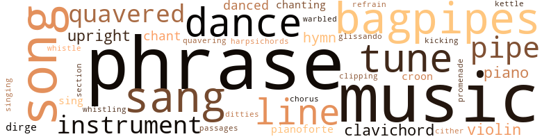
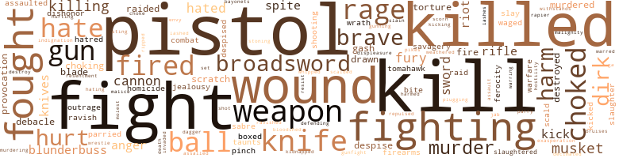

Jarrett's Jade, by Yerby, Frank (1959)
141 music-related terms matched in this text.
Most frequent terms in this topic: music (15); phrase (12); bagpipes (7); tune (6); songs (6)
bagpipe.n.01
Definition: a tubular wind instrument; the player blows air into a bag and squeezes it out through the drone
| word | sentence |
|---|---|
| bagpipes | Dressed , he picked up his bagpipes , and sallied forth into his world . |
| bagpipes | While he waited , he lifted the mouthpiece of the bagpipes to his lips , and began to play very softly , fingering the touch holes of the shortest pipe with real skill . |
| bagpipes | Stood there , spellbound , before the spectacle of Laird James Jarrett , clad , as always , in tartan and kilt , playing his father 's bagpipes . |
| bagpipes | You came off the vessel playing the bagpipes , and I - I remarked you , then ; though you did not see me . |
| bagpipes | Upon James , the first American Jarrett , clad in kilt and tartan still , the bagpipes slung about his shoulders . |
| bagpipes | On the ' left , the Highlanders ' Pipe Major loosed the bagpipes ' hideous cry . ' |
| bagpipes | He was a Jarrett , of that stem Highland race who had repeatedly marched out to certain death with a song on their lips , to the tunc of the bagpipes ' squalling . |
chant.n.01
Definition: a repetitive song in which as many syllables as necessary are assigned to a single tone
| word | sentence |
|---|---|
| chant | He had n't meant to play loudly , but the tune was his favorite : the warsong of Clan Jarrett , and , despite his good intentions not to disturb the neighbors at such an hour , that wild , keening chant took hold of him . |
chorus.n.01
Definition: any utterance produced simultaneously by a group
| word | sentence |
|---|---|
| chorus | Which was not to say he made lovely music : at their very best the pipes sound like a chorus of amorous tomcats . |
clavichord.n.01
Definition: an early stringed instrument like a piano but with more delicate sound
| word | sentence |
|---|---|
| clavichord | And since it was obviously impossible to transport a clavichord to the Jarrett home , Reverend Zuhlbuber had depended upon wording his note vaguely enough to give the requested visit the import of extreme urgency . |
| clavichord | Without a word , the Pastor turned toward where Jarl sat before the clavichord . |
| clavichord | He has had no lessons ; he has never seen a clavichord before today ; and yet - " " You 're saying that he 's a born musician ? " |
| clavichords | It was a curious new instrument called a pianoforte , that is , a softloud , because unlike the clavichords , and harpsichords , it could thunder as well as sing . |
| clavichord | And Jarl , whose efforts had been confined to the violin and the puny clavichord , lived in the seventh heaven of delight . |
clipping.n.01
Definition: an excerpt cut from a newspaper or magazine
| word | sentence |
|---|---|
| Clipping | " Clipping and playing ! " something in him died . |
croon.v.01
Definition: sing softly
| word | sentence |
|---|---|
| croon | Turned , and saw its mother , a filthy slattern like all the rest , sitting there rocking back and forth and croon ing tenderly to her empty arms . |
| croon | Where she could croon her babies to sleep , watch them grow tall and strong with noses like a broadaxe 's blade , a jut of brow , eyes like young eagles , and a mouth - a mouth - She could feel the weakness entering her . |
dance.n.01
Definition: an artistic form of nonverbal communication
| word | sentence |
|---|---|
| dances | Gave up attendance at the horseraces on Leith stands , cockfighting , curling , and attendance at dances . |
| dance | Outside , they heard a horse dance as he mounted . |
| dance | With all London performing a slow and stately dance about his head , he stepped to the edge of the road and hailed an open landau which bore the sign , " For Hire . " |
| dance | Two days out , during one of those rare intervals of calm - which was to say only that the Simmons , instead of standing on her beams ' ends , and alternately pointing her prow at the heavens , and attempting to plunge straight for the ocean 's floor , was rolling but at a moderate forty-five degree angle , and pitching at something around fifteen - James was standing at the lee rail watching that devil 's dance of wind and water with a grim smile on his face . |
| dance | Tomochichi began to chant his warsong ; his braves danced the blood dance upon the decks . |
| dance | The night of August 21st , 1739 , James sat before the campfire in Coweta , watching the Creek braves performing their buffalo dance . |
dance.v.03
Definition: skip, leap, or move up and down or sideways
| word | sentence |
|---|---|
| danced | In my father 's time , we always lit the Beltan fires and danced them round to keep the wee ones pacified - or else they 'd slay the cattle in the byre - or steal the children , and leave changelings in their places . |
| danced | Tomochichi began to chant his warsong ; his braves danced the blood dance upon the decks . |
| danced | I wo n't hold back ; I wo n't be a yellow bellied rat enough - He took a step forward , so sick that the square danced before his eyes . |
dirge.n.01
Definition: a song or hymn of mourning composed or performed as a memorial to a dead person
| word | sentence |
|---|---|
| dirge | " Oh , " she whimpered , her voice a wild , piping dirge of desolation , " I wish - I wish I could kiss you ! " |
| dirges | During those cold , grey days of January , 1744 , when the sea never stopped its thundering , and all the winds sang dirges , he had only one thing to be thankful for : that in the daily rides he took despite the weather , coming home soaked to the skin , and acquiring a deep-seated chest cold , that , though he dismissed ? |
ditty.n.01
Definition: a short simple song (or the words of a poem intended to be sung)
| word | sentence |
|---|---|
| ditties | Rollicking camp ditties , taking care to clean them up so that she would not be offended . |
glissando.n.01
Definition: a rapid series of ascending or descending notes on the musical scale
| word | sentence |
|---|---|
| glissando | Turned it into a long glissando like a shower of silver sparks . |
harpsichord.n.01
Definition: a clavier with strings that are plucked by plectra mounted on pivots
| word | sentence |
|---|---|
| harpsichords | It was a curious new instrument called a pianoforte , that is , a softloud , because unlike the clavichords , and harpsichords , it could thunder as well as sing . |
hymn.n.01
Definition: a song of praise (to God or to a saint or to a nation)
| word | sentence |
|---|---|
| hymns | The pages of his notebook were filled with verses , hymns to Spring , to the birds , the flowers . |
| hymns | Jarl had , of course , heard music before : the pedestrian hymns of the church , the English drinking songs ; but music like this , like this ! |
| Hymn | He seized the violin from the fiddler , leaped to the top of the bar - finding to his pleased , and drunken , amazement that his broken claw could draw a bow well enough , while his left hand could finger the strings with all its accustomed skill - and composed a Hymn to Liberty upon the spot . |
| hymn | The mocking bird chanting a hymn to the night . |
kettle.n.04
Definition: a large hemispherical brass or copper percussion instrument with a drumhead that can be tuned by adjusting the tension on it
| word | sentence |
|---|---|
| kettle | The kettle - drum 's roll was long , drawn out . |
kick.v.04
Definition: kick a leg up
| word | sentence |
|---|---|
| kicking | The others ringed him round about , kicking . |
music.n.01
Definition: an artistic form of auditory communication incorporating instrumental or vocal tones in a structured and continuous manner
| word | sentence |
|---|---|
| music | He surrendered to its stirring music , playing with verve and skill , as his father had taught him to . |
| music | Which was not to say he made lovely music : at their very best the pipes sound like a chorus of amorous tomcats . |
| music | And there had been a music hall girl or two by then . |
| music | ... " " Father , " the girl said sharply , her Castilian like dark music in James ' ears , " for one whose hurt is of the gravest , he speaks too much , I think ! " |
| music | " Though in a voice like yours , Sister , all tongues take on celestial music . . . Sor Asuncibn colored vividly . |
| music | Jarl had , of course , heard music before : the pedestrian hymns of the church , the English drinking songs ; but music like this , like this ! |
| music | Jarl had , of course , heard music before : the pedestrian hymns of the church , the English drinking songs ; but music like this , like this ! |
| music | But the music took hold ; he forgot his father quite , forgot the Pastor , the dim and silent room , forgot all else but what was in his heart , what he was made for , bom to do . |
| music | Your voice is so sweet , like music . |
| music | I did not know such music existed , nor that anyone could play like that ! " |
| music | He was far too intelligent to play the heavy father , forbid young Jarl the music that he loved . |
| music | Often he would sit by the hour listening to his son play - for this music spoke to him , too ; but always without uttering a word of comment or the praise that Jarl longed to hear . |
| music | Then , abruptly , the music stopped . |
| music | Does he think I dislike music ? " |
| music | Plague take it , Lass , I like music ! |
musical_instrument.n.01
Definition: any of various devices or contrivances that can be used to produce musical tones or sounds
| word | sentence |
|---|---|
| instrument | Frowning , James gave her his beloved instrument . |
| instrument | He had not picked up the traditional instrument of the Highlanders since he left his native hills as a child . |
| instrument | And I see in you the instrument of its fulfillment - " " What was that dream , Sir James ? " she whispered . |
| instrument | It was a curious new instrument called a pianoforte , that is , a softloud , because unlike the clavichords , and harpsichords , it could thunder as well as sing . |
| instrument | Jarl 's treasure had been built by no less than Gottfried Silbermann , himself , that master designer who had made the first such instrument to be heard in Germany for Johann Sebastian Bach . |
passage.n.06
Definition: a short section of a musical composition
| word | sentence |
|---|---|
| passages | And the offshore islands , with the narrow , crooked passages that divided them from the mainland , made this coast a smuggler 's paradise . |
phrase.n.02
Definition: a short musical passage
| word | sentence |
|---|---|
| phrases | Trudy moved through life like a sleepwalker , uttering disjointed phrases , which seldom , if ever , made any sense at all . |
| phrase | How could a man put into words the feelings the phrase , " The Rising of Fifteen , " brought leaping into anguished life ? |
| phrase | She picked up her phrase in midflight . |
| phrase | " Well - " Jane faltered , " the phrase is hardly suited for a woman 's lips , is it ? |
| phrase | That ugly phrase you used has no exact meaning for them ; but , you may believe me ; they 're plagued anxious to uncover its real meaning . |
| phrase | " But , if Grace will ever let me finish a whole phrase , I 'd like to tell you that she is n't really impolite because she 's so infernally - and I think unnecessarily - on the defensive , that she 's formed this ugly habit of striking before she Will you behave yourself , please , Grace ? |
| phrases | Though he mulled over the past long and deeply , about the future , he habitually thought in truncated phrases . |
| phrase | " I 'll be like that phrase father is so fond of quoting from Sir Francis Bacon : ' Who can see worse days than he that yet living doth follow at the funeral of his own reputation ? ' |
| phrase | He went off through the rain , walking ever faster , muttering a phrase from Plautus : Homo homini lupus ! |
| phrase | He was not even identified beyond the phrase " an humble employee at a respectable local Banking House . " |
| phrase | 'T is not a hard phrase to say . . . . " 4 - ' She stared at him , and her eyes were troubled . |
| phrases | Certain phrases that Squire Andrews had used - " Shall we go into my study , and discuss - your price ? |
| phrase | " Nothing , " he groaned ; " Just a - a nightmare , Lass . . . . " The phrase rang true . |
| phrase | ' I love you ' is n't a phrase that grows tiresome - especially from the man who is my life , all my life . |
| phrase | And , at fifteen years , the phrase " a broken heart , " is far from an empty one . |
piano.n.01
Definition: a keyboard instrument that is played by depressing keys that cause hammers to strike tuned strings and produce sounds
| word | sentence |
|---|---|
| pianoforte | It was a curious new instrument called a pianoforte , that is , a softloud , because unlike the clavichords , and harpsichords , it could thunder as well as sing . |
| piano | It would be many years yet before natural human laziness would shorten that name to piano , and forget com - pletely what the word originally meant . |
| pianoforte | Jarl was playing the pianoforte when they brought him home . |
| piano | The only thing he really loves is that ruddy piano . " |
| piano | The day after his fifteenth birthday , he was sitting at the piano , playing for Mary . |
| piano | That night he sat before the piano . |
| piano | Saw Jarl Jarrett standing there , with the broadaxe in his hands , before the ruin of the piano . |
pipe.n.04
Definition: a tubular wind instrument
| word | sentence |
|---|---|
| pipe | While he waited , he lifted the mouthpiece of the bagpipes to his lips , and began to play very softly , fingering the touch holes of the shortest pipe with real skill . |
| pipes | From the four pipes , each of a different length in order to vary their tones , a wild caterwauling rose . |
| pipes | Which was not to say he made lovely music : at their very best the pipes sound like a chorus of amorous tomcats . |
| pipes | Judy took the bag pipes and went back inside , grumbling to herself . |
| pipes | To the untrained ear , the bloodcurdling wails produced by the greatest master of the pipes alive and the fumblings of an utter duffer are completely indistinguishable from one another . |
promenade.n.01
Definition: a formal ball held for a school class toward the end of the academic year
| word | sentence |
|---|---|
| promenade | James climbed down , strolled up behind them with all the casualness of a man upon a Sunday morn ing promenade . |
refrain.n.01
Definition: the part of a song where a soloist is joined by a group of singers
| word | sentence |
|---|---|
| refrain | And they wo n't be as long as you , Sir , refrain from provoking the Spaniards . |
section.n.01
Definition: a self-contained part of a larger composition (written or musical)
| word | sentence |
|---|---|
| section | Interpreted for me - and when I mentioned I came from this section , her eyes lit up - like candles in a church . |
sing.v.02
Definition: produce tones with the voice
| word | sentence |
|---|---|
| sang | James sang out . |
| sang | During those cold , grey days of January , 1744 , when the sea never stopped its thundering , and all the winds sang dirges , he had only one thing to be thankful for : that in the daily rides he took despite the weather , coming home soaked to the skin , and acquiring a deep-seated chest cold , that , though he dismissed ? |
| sang | Always , when they sang , James could feel a little knot of unease forming at the pit of his stomach . |
| sang | " Fifty pounds ! " one of them sang out . |
| sing | It was a curious new instrument called a pianoforte , that is , a softloud , because unlike the clavichords , and harpsichords , it could thunder as well as sing . |
| Sang | Sang the songs of her childhood all the time . |
| sang | " Fire ! " the seconds sang out . |
| sang | He sang tender love songs to Gert . |
| sing | As gay , as charming , and could sing almost as well . |
singing.n.01
Definition: the act of singing vocal music
| word | sentence |
|---|---|
| singing | Hear them singing . |
song.n.01
Definition: a short musical composition with words
| word | sentence |
|---|---|
| songs | There was no sadness in this world equal to that in the blacks ' songs . |
| songs | Jarl had , of course , heard music before : the pedestrian hymns of the church , the English drinking songs ; but music like this , like this ! |
| songs | Sang the songs of her childhood all the time . |
| songs | Reeled from the Tavern in the full light of morning , for that drunken j , rabble whose female descendants would become The Daughters of the American Revolution kept him playing bawdy drinking songs all night , and encountered Gertrude and Millicent Tyson going to the market , accompanied by their slaves . |
| song | A glass in one hand , and a lass tucked beneath his other arm , Jarl was roaring out a stanza of the song that one Francis Hopkinson , who later made the first American flag - the one that Betsy Ross did n't make , but got the credit for anyhow - had written . |
| songs | He had a wonderful baritone voice , and he knew all the hit songs of the day . |
| songs | He sang tender love songs to Gert . |
| song | He was a Jarrett , of that stem Highland race who had repeatedly marched out to certain death with a song on their lips , to the tunc of the bagpipes ' squalling . |
tone.v.01
Definition: utter monotonously and repetitively and rhythmically
| word | sentence |
|---|---|
| chant | She was a tiny blonde , some eighteen years of age , and pretty enough to make the angels chant hosannas . |
| chant | Tomochichi began to chant his warsong ; his braves danced the blood dance upon the decks . |
| chanting | And Tomochichi and his braves burst aboard in feathers and paint , chanting their warsong , and threatening death to every Spaniard in this world for alleged crimes against the Indian nations . |
| chanting | The mocking bird chanting a hymn to the night . |
tune.n.01
Definition: a succession of notes forming a distinctive sequence
| word | sentence |
|---|---|
| line | His skin was drawn tight over the bones of his face , and a wide red line , through which no hair would ever grow again , arched through the porcupine quills which had sprouted on his head . |
| tune | He had n't meant to play loudly , but the tune was his favorite : the warsong of Clan Jarrett , and , despite his good intentions not to disturb the neighbors at such an hour , that wild , keening chant took hold of him . |
| tune | Moreover , he forbade the crew 's intent to subject the passengers , landlubbers to a man , to the rough horseplay in worship of King Nep tune . |
| tune | There was , under all the caterwauling , a recognizable fragment of a tune . |
| tune | The next day , February 6th , 1736 , he marched ashore , again playing that wild tune , but somewhat more surely , and with a certain verve . |
| line | You see , I am the last of my line - and , in Scot land , we were nobles . . . . " " Blimey ! " |
| line | I am the last of my line , Lass - with me , Clan Jarrett , the Marquises of Argyll will die , unless I wed and sire tall sons . |
| tune | Perhaps the nightjar of the skyward-dwelling shrew had been the shower of for tune , after all . |
| line | And I - even though it seems to me that you have not - have sufficient faith in your sister 's decency to be sure she 'll keep him in line . |
| line | " The waiting line for grateful receivers of such donations forms on the right , " Noble W. Jones laughed . |
| tune | And , finally , there was Yorktown , where Cornwallis ' troops marched out to stack their arms to the tune of " The World Turned Upside Down . " |
upright.n.02
Definition: a piano with a vertical sounding board
| word | sentence |
|---|---|
| upright | She - she 's gone . . . . " James came upright at once . |
| upright | She came upright in the bed , gathering the coverlets about her , her face gone white as death . |
| upright | " I go to fetch Reverend Wesley . . . . " She came upright , staring at him , and her eyes were wild . |
| upright | He sat bolt upright in bed , remembering Loosa 's words : " All my life long , I 'll think of you , and the very thought will com - fort me . |
| upright | James came upright , then . |
violin.n.01
Definition: bowed stringed instrument that is the highest member of the violin family; this instrument has four strings and a hollow body and an unfretted fingerboard and is played with a bow
| word | sentence |
|---|---|
| violin | The silence between them stretched itself out , out , out , quivering upon a violin note just below the level of sound . |
| violin | And Pastor Martin Zuhlbuber was standing by his window playing the violin , while his daughter , Maria , accompanied him upon the clavi - chord . |
| violin | And Jarl , whose efforts had been confined to the violin and the puny clavichord , lived in the seventh heaven of delight . |
| violin | I bought him a new violin . " |
| violin | He seized the violin from the fiddler , leaped to the top of the bar - finding to his pleased , and drunken , amazement that his broken claw could draw a bow well enough , while his left hand could finger the strings with all its accustomed skill - and composed a Hymn to Liberty upon the spot . |
warble.v.01
Definition: sing or play with trills, alternating with the half note above or below
| word | sentence |
|---|---|
| quavered | " Is - that - all you want of me ? " she quavered . |
| quavered | " You 've wed , then , my boy ? " the old man quavered . |
| quavered | " Just - just a minute , " Sue quavered . |
| quavered | " Papa , " he quavered , " dites moi , qui est ce qui vive en haut ? " |
| quavering | " And , " Mary said , her voice quavering a bit , " you 'd like for me to be - your - your mother ? " |
| quavered | " Go back to sleep , Mary ; you 've got the vapors for a fact . . . . " " James - " Mary quavered . |
whistle.v.01
Definition: make whistling sounds
| word | sentence |
|---|---|
| whistle | He heard the whistle of the ball ; then he was bent over low , racing in with yard-wide , zig zagging leaps , calculated to throw Henry off the mark . |
| whistling | It was then that James brought that crop whistling across Jarl 's face . |
yodel.v.01
Definition: sing by changing register; sing by yodeling
| word | sentence |
|---|---|
| warbled | Then it rose to the shriek of a banshee , warbled high and shrill upon as inharmonious a note as ever assaulted human hearing . |
zither.n.01
Definition: a musical stringed instrument with strings stretched over a flat sounding board; it is laid flat and played with a plectrum and with fingers
| word | sentence |
|---|---|
| cither | Your eyes are so lovely , and ' - Which means , my dear , cither that he is a glib rogue like every Jarrett born , or that he is beginning to display some glimmerings of sense . . . " James , you wrong him , I think . |
559 violence-related terms matched in this text.
Most frequent terms in this topic: kill (30); fight (26); killed (22); wound (18); fighting (17)
abrasion.n.01
Definition: an abraded area where the skin is torn or worn off
| word | sentence |
|---|---|
| scratch | " A scratch , " James muttered ; but his head ached as though all the fiends In hell were hammering at his skull . |
| scratch | Jarl and Tarleton exchanged fire five times without either of them getting a scratch . |
| scratch | " It 's nothing , Milly , " he growled , " only a scratch , not more . . . " This must stop ! " she wept , " this instant ! |
aggravation.n.01
Definition: an exasperated feeling of annoyance
| word | sentence |
|---|---|
| exasperation | Milly said in purest exasperation . |
aggravation.n.02
Definition: unfriendly behavior that causes anger or resentment
| word | sentence |
|---|---|
| provocation | For , if you knew it not before , now you do : a lad never strikes a lass , no matter how gross the provocation . |
| provocation | Most surprising of all was the fact that he managed to maintain an unbroken peace with his brothers-in-law , despite not infrequent provocation on their part . |
| provocation | It curved in , lifted up , rounded with devilish provocation . |
anger.n.01
Definition: a strong emotion; a feeling that is oriented toward some real or supposed grievance
| word | sentence |
|---|---|
| anger | You 've been here three years , and not a shot has been fired in anger between us and them . |
| anger | She could feel the anger draining out of her . |
| anger | Not one Georgia musket was fired in anger , nor a single life lost . |
| anger | Rather he would lift his craggy head against the heavens , defy the lightnings , hurl down his gauge in titanic anger before the very throne of God , Himself . |
| anger | ... " He had stared at her in astonishment , in anger , in deep and bitter pain . |
assail.v.01
Definition: attack someone physically or emotionally
| word | sentence |
|---|---|
| assaulted | Then it rose to the shriek of a banshee , warbled high and shrill upon as inharmonious a note as ever assaulted human hearing . |
| assaulted | When you assaulted this man , ' twas you , not he , who were guilty of a criminal act . |
attack.v.01
Definition: launch an attack or assault on; begin hostilities or start warfare with
| word | sentence |
|---|---|
| assailed | Delirious , all the fears , feelings of guilt , con sciousness of his unworthiness assailed him . |
bayonet.n.01
Definition: a knife that can be fixed to the end of a rifle and used as a weapon
| word | sentence |
|---|---|
| bayonets | The British were firing shrapnel : broken bayonets , rusty nails , old belt buckles , scrap iron . |
blister.v.02
Definition: subject to harsh criticism
| word | sentence |
|---|---|
| scalded | James croaked , his eyes scalded , blind . |
| scald | They - they scald me , James . . . " Lass , I 'm sorry , " he began ; but she came up out of her chair in one wild rush , and hurled herself into his arms . |
bloodshed.n.01
Definition: the shedding of blood resulting in murder
| word | sentence |
|---|---|
| bloodshed | Underfoot , this pallid , delicate , artistic caricature of a Jarrett , with his maddeningly Frenchified manners , his shrinking from sports , from bloodshed , from all the rough and tumble ways of men . |
blunderbuss.n.01
Definition: a short musket of wide bore with a flared muzzle
| word | sentence |
|---|---|
| blunderbuss | But , almost at once , the stage pulled to a halt , and the guard climbed down , blunderbuss in hand . |
| blunderbuss | And having your blunderbuss at hand would be a comfort . . . . " " Follow if you will , " the guard said . |
| blunderbuss | The guard got off a blast with his blunderbuss , with miraculously good results , considering the heaving platform from which he aimed . |
| blunderbuss | The guard had two horsepistols in addition to the blunderbuss . |
| blunderbuss | " Next Spring I 'll be stationed before your door with a little monster in my arms and father beside me with his blunderbuss . |
box.v.03
Definition: engage in a boxing match
| word | sentence |
|---|---|
| boxed | In two strides he closed the distance between him and that sedan chair , leaned in and boxed the maiden 's ears right lustily . |
| boxed | She yanked Milly to her feet , and boxed her ears with icy , aristocratic fury . |
broadsword.n.01
Definition: a sword with a broad blade and (usually) two cutting edges; used to cut rather than stab
| word | sentence |
|---|---|
| broadswords | Why , with their claymores , our forebears could cut a man in two at the waist - " " You mean broadswords , do n't you , Father ? " |
| broadsword | The highwayman drew his broadsword . |
| broadsword | A broadsword 's a puny toy in comparison . |
| broadsword | They trudged on , the boy beating the hedges with a blackthorn dub , while his father idly swung the Scotch broadsword without which any Highlander would have considered himself positively naked . |
| broadsword | But the sight of a kilted High lander , complete with broadsword and target , driving a black cow up ' High Street , followed by his small son , dressed in miniature duplica tion of his father 's garb , was n't the commonest sight in the world , " j even in a city as filled with sights as Edinburgh . |
| broadsword | Jonathan Jarrett loosed the cow , unlimbered his broadsword , voiced the warcry of his clan , and charged the porters . |
| broadsword | But , as a score of Highland dirks glittered in the morning sun , and a broadsword or two was unsheathed , General Oglethorpe came marching sternly between the Scotsmen and the soldiers . |
| broadsword | They marked well , too , the pistols nestling alongside the dirk in his belt , the two skean dhus in his socks , the Scotch broadsword that hung at his side . |
| broadsword | James leaped to his feet , his broadsword ready in his hand . |
| broadsword | Saw that white-maned , killed giant , in the vanguard of the Tory forces , swinging his broadsword with both hands , cutting down the fleeing rebels like a berserker . |
bruise.n.01
Definition: an injury that doesn't break the skin but results in some discoloration
| word | sentence |
|---|---|
| bruises | He never told his father about these encounters , avoided him for days until his bruises no longer showed . |
butcher.v.01
Definition: kill (animals) usually for food consumption
| word | sentence |
|---|---|
| slaughtered | Green leather thongs , cut from the hides of the slaughtered cattle . |
| slaughtered | His gallant French troops held , and were slaughtered . |
cannon.n.04
Definition: heavy automatic gun fired from an airplane
| word | sentence |
|---|---|
| cannon | The fact is , on this lonely road , I want the protection of that cannon that you 're carrying . . . . " " Ye do seem a gentleman , I 'll allow , " the guard said grudgingly ; " though to ride without hat or cloak is right strange . . . . " " I was robbed of them in the last inn I stopped at , " James lied smoothly , " and a goodly sum in sterling to boot . |
| cannon | Any morning could bring the sight of Spanish sails upon the horizon , any night the thunder of cannon in the bay . |
| cannon | But , just before dawn , the thunder of cannon wakened them . |
| cannon | The sea rose up to meet the sky , booming as though every cannon on earth had been fired at the same time . |
| cannons | The screams of the wounded rose above the cannons ' roar . |
| cannon | Put his cannon upon it . |
contemn.v.01
Definition: look down on with disdain
| word | sentence |
|---|---|
| despised | The Episcopal Church , respected and tolerated in England was outcast and despised in Scotland . |
| scorn | Now I be not one to scorn a dram or two , but enough of a thing is enough . |
| despise | I hate , loathe , and despise you , Beau James ! " |
| despised | " I do n't think you 'd have hated me , " James grinned , " When it comes to that gentle pastime , I - " " I should have hated you , " Sue said flatly , " and despised myself . |
| despise | I rather despise you - which is a pity . |
| despise | She has always pretended to despise him ; and now she is nursing him like the tenderest , most devoted wife on earth . . . . " ' " Women ! " |
cut.n.05
Definition: a wound made by cutting
| word | sentence |
|---|---|
| gash | It was true that the great gash running along his head was not deep . |
| gash | Her left hand slid along the thirteen-inch gash Henry 's ball had opened in his side . |
| gash | The gash , while bad enough , was hardly fatal , and he knew it . |
dagger.n.01
Definition: a short knife with a pointed blade used for piercing or stabbing
| word | sentence |
|---|---|
| dagger | Voicing the warcry of his Clan , James Jarrett drew his two-edged dagger , and proceeded to deftly notch both Peter 's ears and his nostrils like a sow 's . |
death.n.08
Definition: the act of killing
| word | sentence |
|---|---|
| death | You know as well as I that homicide does not carry the death penalty - still less self defense ! " |
defy.v.01
Definition: resist or confront with resistance
| word | sentence |
|---|---|
| withstands | " I 'll see how English honor withstands the thumbscrews and the rack ! " |
destroy.v.04
Definition: put (an animal) to death
| word | sentence |
|---|---|
| destroyed | " And though in addi - tion to having taken my brother 's life , you 've also destroyed my reputa - tion to such an extent that no man alive would have me now , my answer is still the same : No . |
| destroyed | He had destroyed Maebelle Andrews ' future , not to mention Sue 's . |
| destroy | He , who wanted to destroy her maddening image , still the night of her voice , blast out of time desire and form and memory , take upon her indifferently the liberties of war , did none of those things . |
| destroyed | But in the night she almost destroyed him with love , which , be - sides her fits of temper , was the only outlet she had . |
dirk.n.01
Definition: a relatively long dagger with a straight blade
| word | sentence |
|---|---|
| dirk | So he sheathed the dirk . |
| dirks | But , as a score of Highland dirks glittered in the morning sun , and a broadsword or two was unsheathed , General Oglethorpe came marching sternly between the Scotsmen and the soldiers . |
| dirk | " I gave the big one a few neat slices with my dirk , and then took my stick to them . |
| dirk | His dirk hung at his belt . |
| dirks | My sons ca n't go hooting through life , flashing dirks , roistering . . . They 'll have other things to do - grander things , Lass . |
| dirk | They marked well , too , the pistols nestling alongside the dirk in his belt , the two skean dhus in his socks , the Scotch broadsword that hung at his side . |
| dirk | For James Jarrett shot one of the would-be assassins dead upon the spot ; put his dirk against the other 's throat , and ordered the mutineers to lay down their arms on pain of seeing their companion die , too . |
| dirk | " Or better yet , " he said dryly , " I could draw my dirk and plunge it through your heart . |
| dirk | Then , whipping out his dirk , he cut Cromwell loose . |
displeasure.n.01
Definition: the feeling of being displeased or annoyed or dissatisfied with someone or something
| word | sentence |
|---|---|
| displeasure | And , almost immediately , he in - curred his general 's displeasure . |
draw.v.23
Definition: pull (a person) apart with four horses tied to his extremities, so as to execute him
| word | sentence |
|---|---|
| drawn | , , The disarmed troops were drawn up in parade formation . |
| drawn | Preston flushed ; but held his peace ; he had no intention of being drawn into a vulgar brawl before his princess ' eyes . |
| drawn | The next morning , drawn up in parade formation , Jarl witnessed the punishment meted out to his companions . |
eliminate.v.03
Definition: kill in large numbers
| word | sentence |
|---|---|
| decimated | Fever decimated their ranks . |
engage.v.07
Definition: carry on (wars, battles, or campaigns)
| word | sentence |
|---|---|
| waged | Which made little or no difference to Georgia , for the battles of the French and Indian War were waged in far away Canada . |
| waged | He , who waged cruel war , who had embarked upon this shameful expedition without pity , was wounded by pity , by tenderness slain . |
envy.n.01
Definition: a feeling of grudging admiration and desire to have something that is possessed by another
| word | sentence |
|---|---|
| envy | All Frederica turned out to stare at it with admiration and ill-concealed envy . . . . |
ferocity.n.01
Definition: the property of being wild or turbulent
| word | sentence |
|---|---|
| ferocity | I mean to put that ferocity of yours to good use - and soon ! " |
| ferocity | Brute force , animal ferocity , they were born with ; but , now , those qualities were going to be led , directed , put to use by the Machiavellian intelligence , the serpentine indirection , the subtle cunning - even the mesmeristic powers of - a Hogg . |
fight.n.02
Definition: the act of fighting; any contest or struggle
| word | sentence |
|---|---|
| fighting | And two skean dhus , the smaller fighting knives , reposed in their sheaths in his knitted socks , where a Highlander always carried them . |
| combat | Any man with a wound like that should be hors de combat ; but did Peter Knox know it ? |
| fighting | The Georgians ac - cused the Carolinians of cowardice , pointing out the incontestable fact that the forces of the neighboring colony had not lost one mail in all the fighting . |
| fighting | Groggily , Jarl came up again , went on fighting . |
| Fighting | Fighting , bleeding , starving . |
| fighting | He 's off fighting - for the Crown . |
| fighting | In actuality , the grimy , unwashed , louse-infested crew of brig - ands who did most of the real fighting , were soldiers . |
| combat | Tradition has it that James Jarrett was shot down by a foot-soldier while in hand to hand combat with his own son . |
| fighting | At Sheriffmuir , the fighting was right glorious , but the truth Is that we lost . |
fight.n.05
Definition: a boxing or wrestling match
| word | sentence |
|---|---|
| fight | Nor fight . |
| fight | And fight ing is not the way . |
| fight | His native Highland love for a good , rousing fight ; the belief that the Stuarts , restored to the throne , would give Scotland back her independence , reluctantly surrendered in the Union with England of 1707 . |
| fight | There was a look of strength and certainty about him that went beyond the physical , though his great thewed arms and legs showed he was to be reckoned with in a fight . |
| fight | I dearly love a fight , but on my own terms , and under the command of no one . |
| fight | After all , this raw new land did abound with savage men and beasts , and he was in no mood for a fight . |
| fight | He , after all , witnessed the circumstances surrounding that particular fight . |
| fight | All right , he kilt Pete - but in a fair fight , when youf brother was trying to brand ' im . |
| fight | Each morning during the month they remained in Coweta , he fought again his predoomed fight . |
| fight | Be - yond that , beneath it , ran a deeper , subtler fear , which she never put into words : With the destruction of all his hopes , what was to prevent her James from deliberately seeking death , hurling himself into the thick of the fight in the vanguard of a Highlanders ' charge ? |
| fight | Between the long , slow kisses , salt with her tears , he fought his silent fight . |
| fight | I wit - nessed that fight . |
| fight | England , victorious , had gained Florida as a prize , for the Spanish had made the mistake of coming to the aid of the French too late , when the fight was already lost . |
| fight | Jarl staggered to his feet , joined the fight . |
| Fights | Fights th ' blinkin ' war on interior lines . |
| fight | For , in the midst of the fight , he found himself facing a Cherokee Brave . |
fight.v.02
Definition: fight against or resist strongly
| word | sentence |
|---|---|
| fought | Ceaselessly James Jarrett fought ; effortlessly Squire Hogg won every contest . |
| fighting | It was less easy than he had thought : the highwayman was consciously fighting for his life . |
| fought | He 'd looked forward eagerly to seeing the Campbells humbled ; but John Campbell , the Duke of Argyll , at Sheriffmuir , had fought their Jacobite army of eight thousand men to a standstill by his skillful use of the only thirty-five hundred troops he had had under his command . |
| fighting | Jonathan had stuck it out that long ; but when he saw the man he had been fighting for , he deserted in a sick rage . |
| fight | And J do n't believe you have strength enough yet to fight to guard your purse . . . . " " Your advice is well taken , " James said . |
| Fought | Fought like a tiger , he did . |
| fought | One of the things he did n't know about Highland Lairds was that they fought with their fists only when they could n't possibly avoid it . |
| fighting | " You 've proved abundantly , Sir James , " he said , " that you have fighting blood . |
| fighting | Of such men we have a sad lack - and with the French muttering away in Moville , and the Spaniards at Saint Augustine , we 're going to need all the fighting men we can get . . . " You are making a slight mistake , General , " James said dryly . |
| fight | If we are attacked , I shall enlist and fight - because I prefer even that fat Hanoverian swine who sits on the throne to being subjected to a Papist King . |
| fight | If you fight again , some one of you might be killed . |
| fight | Mayhap a war to fight . |
| fighting | Because his two skean dhus , his fighting knives reposed there still . |
| fighting | But they were fighting quicksilver , lightning . |
| fight | With his hands unbound , and able to fight . |
| fighting | I have a horror of fighting and of blood , Sir James . |
| fought | " So horrid , " he chuckled , feeling the weakness in him down to the very bone , " that you came flying to my defense , threatened to shoot your own brothers , fought like a tigress - " " I 'd have done as much for any man , " she began ; but he held her with his eyes . |
| fought | " After all , you fought in self defense , and could as easily have put that blade through his heart . |
| defending | He was only defending himself . |
| fought | She had fought . |
| fight | " What with the General in England raising troops to fight the Dons , we 'll probably get shot on sight ! " |
| fought | Each morning during the month they remained in Coweta , he fought again his predoomed fight . |
| fought | Took part in the successful second at - tack on those same forts on New Year 's Day of 1740 , their forces led by General Oglethorpe , himself ; fought bravely , albeit his effective - ness was somewhat hampered by the necessity of having to watch Henry Knox as well as the Spaniards , to see that that cowardly would - „ be assassin did not take advantage of the matchless opportunities the heat of battle offered a man bent on murder . |
| fought | Between the long , slow kisses , salt with her tears , he fought his silent fight . |
| fighting | But , to James ' astonishment , Henry Knox held out , fighting in what seemed to be a curiously feminine combina - tion of hysterical rage and fear , until long after both Tim and Crom - well had gone . |
| fought | They fought to the last man . |
| fought | Father told me how you fought - one man against an army . |
| fight | I 'll fight - " " Tie those brats up , and leave them here , " Cromwell ordered . |
| fighting | I doubt that a practical man would have been able to beat the Dons and save the colony with only five hundred men , and no fleet , fighting against five times your numbers . |
| fought | James fought him down again , saw - The gelding lying on its side , its neck doubled at an angle that left 00 room for doubt . |
| fought | Despite food so exquisitely prepared that people all but fought for invitations to the Andrews ' table . |
| fighting | For he had never heard of La Savate , that curious French art of fighting with one 's feet . |
| fight | John Hancock , who 'd have us fight so he can go on smug - gling ! |
| fought | It was fought without quarter , with an absolute disregard for the rights of civilians that distinguished it unhappily even from the second , which was bad enough . |
| fought | JARL DID N'T GET to Cambridge , Massachusetts , where that wild band of backwoods bushwhackers who called themselves the Ameri - can Army were , until after the Battle of Breed 's Hill - to give it its right name , for it was n't fought on Bunker 's Hill at all - was over . |
| fight | And as long as she 's got him , we do n't have to fight . |
| fight | I came not to this country of yours to save your cowardly hides , but to learn to fight . |
| fight | " If I makes Henri turn you loose , you promise not to fight ? " |
| fought | It was n't his father that Jarl fought . |
| fighting | Stared into each other 's eyes and - stopped fighting . |
firearm.n.01
Definition: a portable gun
| word | sentence |
|---|---|
| firearms | But the others bore ten or twelve pistols in their belts and shoulder straps , so that in a day when repeating firearms did not exist , they managed to keep up a running fire . |
| firearms | They raced down the stairs to his study , where he kept his rack of firearms . |
fury.n.01
Definition: a feeling of intense anger
| word | sentence |
|---|---|
| rage | Taken out upon the hide of a completely innocent stranger the festering rage he felt toward all the world . |
| rage | The woman 's face went red with sudden rage . |
| rage | Jonathan had stuck it out that long ; but when he saw the man he had been fighting for , he deserted in a sick rage . |
| rage | Sick as he was , the rage in him lent him strength . |
| Fury | Fury entered him . |
| rage | Oh , I 'll - " Then with her slender , almost angelic face gone white with rage , she hurled herself upon him , pounding at his chest with two small , inef fectual fists . |
| rage | They rode off in a towering rage to search for him . |
| fury | " You promised me ! " she said , her voice tight with fury ; " you prom ised you 'd not hurt them - and now you 've gone and all but killed Peter ! " |
| rage | But , to James ' astonishment , Henry Knox held out , fighting in what seemed to be a curiously feminine combina - tion of hysterical rage and fear , until long after both Tim and Crom - well had gone . |
| fury | Then he said it , his voice choked with fury : " You get out of here , you selfish swine ! " |
| fury | She fell back before his fury . |
| rage | His rage was all the worse because he knew it unworthy . |
| rage | So he faced her now , so sick with rage , with fear , that despite him - self , he trembled . |
| rage | she lulled the doubting in his heart , stilled the festering rage , the blank despair . |
| fury | She yanked Milly to her feet , and boxed her ears with icy , aristocratic fury . |
| rage | His steel-grey eyes went smoky with rage . |
| rage | He found the Frenchman packing , his face white-lipped and tight with rage . |
| fury | By then , in the state of cold fury she had reached , no two men could have held her - nor any ten . |
gag.v.06
Definition: cause to retch or choke
| word | sentence |
|---|---|
| choking | " Mae ! " he got out , his voice choking , thick , " you have n't heard a word I said ! " |
| choked | " Not - " she choked , " to see us wed , Jaimie ! |
| choke | Instead of breaking the felon 's neck cleanly , the robber 's victims had the keenly felt pleasure of watching the maimed man kick and choke for eight long minutes , while his tongue protruded , his eyeballs bulged from their sockets , and his lean face turned slowly purple . |
| choking | There ye can be assured of dying in bed of peaceful old age , instead o ' choking yer life out upon the gallows . |
| choked | " Oh , Miss Sue ! " the footman choked , his voice humid with tears . |
| choked | " Oh , Bev ! " she choked , " he is so like ! |
| choked | Had to make sure he dropped it , and did n't pick it up again . . . " I fear me , " she choked , " he 'll pick up nought else in this life . |
| choked | " Damned brave , " Tim choked . |
| choked | " Clan Jarrett ! " he choked . |
| choked | Then he said it , his voice choked with fury : " You get out of here , you selfish swine ! " |
| choked | For fourteen days and nights , James Jarrett lay and choked , or tossed and raved . |
| choked | Terribly , hoarsely , the great animal sobs tearing up out of his throat , weeping out his anguish and his despair , " Ca n't live ! " he choked ; " ca n't live ! |
| choking | He woke up choking and gasping , hear - ing already the crackle of flames . |
| choked | " They did n't blow it up , Milly , " he choked . |
| choked | Hell of an end for a Jarrett . . . . " " Father , " Jarl whispered , his voice thick with choked back tears , " I - " " You , " James croaked , " are a man and a soldier , son . |
| choked | Get sons - " " Yes , father , " Jarl choked . |
gun.n.01
Definition: a weapon that discharges a missile at high velocity (especially from a metal tube or barrel)
| word | sentence |
|---|---|
| gun | Hammered that vast head with the barrel of the gun until all the full-bottomed wig was red . |
| guns | It cut through the thunder of the twenty-one guns that were being fired in the General 's honor . |
| guns | Walls ten feet thick , bristling with guns . |
| gun | James saw the flash of the priming powder in the flintlock 's pan and threw himself to one side even before the gun roared . |
| gun | One which is weak and defenseless - or one that can match them gun for gun ? " |
| gun | One which is weak and defenseless - or one that can match them gun for gun ? " |
| gun | " First the salutes - you 'd have thought every gun in this wicked world was being fired . |
| guns | Cleared his way to the center of it by the simple process of cracking the heads of all who were in his way with the barrels of his guns . |
| guns | His little fleet , upon whose guns he had pinned his hopes , proved far too heavily laden to cross the bar . |
| guns | Saint Augustine was as strong as Porto Bello , nearly as strong as Cartagena - and the whole British Fleet had failed before those two , while his nine pitiful craft with their light guns lay outside the bar , their crews growing daily more mutinous ... On the night of the 19th , he gave his orders for a general retreat . |
| gun | Daily he exercised with the foils with his father ; at nine , he was already a polished wingshot , far better with a gun than his father would ever be . |
| gun | I know how to load a gun ! |
gun.v.01
Definition: shoot with a gun
| word | sentence |
|---|---|
| gunning | Even from the two - or three-yard range to which they had closed now , the highwaymen discharged most of their weapons before they succeeded in gunning both the driver and the guard down . |
gunfight.n.01
Definition: a fight involving shooting small arms with the intent to kill or frighten
| word | sentence |
|---|---|
| gunfight | And he had prudently reined in his barb , allowing the distance to become greater as the running gunfight sped along the road . |
harm.v.01
Definition: cause or do harm to
| word | sentence |
|---|---|
| harmed | Fortunately , the guards caught them before they harmed her . |
| harm | I 'd die in my socks before I 'd harm yob . |
| harm | I 'll ask him not to harm you - and he 'll heed me , I 'm sure . . . Wo n't you , James ? |
| harm | " Nay , Lass , " James bassed , " I 'll not harm them . |
| harm | He made no move to harm me when I was entirely In his power . |
hate.n.01
Definition: the emotion of intense dislike; a feeling of dislike so strong that it demands action
| word | sentence |
|---|---|
| hate | You are n't even worthy of so fine a thing as hate . |
| hate | His response to John Wesley was the age-old response of outlaws to pillars of respectability , the maintainers of social order : wild , unreasoning hate . |
| hatred | Without her , the things he had to bear : the hatred and contempt of his fellows , the slow , creeping years of silence , of loneliness , those ten full years of listening to his Mary 's anguished footsteps in the night , would have been beyond even his endurance . |
| hate | But Jarl , his son , by nature and temperament , one of the most un - likely revolutionaries anyone could possibly imagine , stood on the quai , a rebel among rebels , prepared to turn upside down a world that had rejected him , and by so doing , earned his undying hate . |
| hatred | He was terrified and incensed by the fact that Maebelle , herself , showed certain signs of a diminution in her hatred for the man who had almost surely murdered her father . |
hate.v.01
Definition: dislike intensely; feel antipathy or aversion towards
| word | sentence |
|---|---|
| hate | Oh , I hate you ! |
| hate | I hate , loathe , and despise you , Beau James ! " |
| hate | " If he had n't shown up when he did - " " I should hate you , now , " Sue whispered , " instead of - of loving you . |
| hated | " I do n't think you 'd have hated me , " James grinned , " When it comes to that gentle pastime , I - " " I should have hated you , " Sue said flatly , " and despised myself . |
| hated | " I do n't think you 'd have hated me , " James grinned , " When it comes to that gentle pastime , I - " " I should have hated you , " Sue said flatly , " and despised myself . |
| hate | I - I hate it , Beau James ! |
| hate | D'you hate me enough for that ? " |
| hated | For , though he hated the sight of it by now , the hard fact remained that the fruits of his crimes were the only means by which he could carry out Laird Jonathan 's dying wish . |
| hate | I 'd thought I could hate you ; but I ca n't . |
| hate | I hate you ! |
| hating | Seems to me that hating you is a luxury he does n't want to give up . . . . " " Or a vice , " James said dryly . |
| hates | He can ride and shoot , but he hates both . |
| hated | One of the reasons he hated Preston Knox so was that at bottom he envied him . |
| hated | No one in the Andrews ' household had been closer to this devious monster than the Italian , child of a faith that Hogg now revealed he hated . |
| hated | In fact , he hated it . |
homicide.n.01
Definition: the killing of a human being by another human being
| word | sentence |
|---|---|
| homicide | All I can be charged with truly - is homicide , and self defense . |
| homicide | You know as well as I that homicide does not carry the death penalty - still less self defense ! " |
hostility.n.01
Definition: a hostile (very unfriendly) disposition
| word | sentence |
|---|---|
| hostility | But Henry maintained his wall of frozen hostility . |
indignation.n.01
Definition: a feeling of righteous anger
| word | sentence |
|---|---|
| indignation | James was about to revise his opinion of human nature for the better , when he learned that due to public indignation , the wounded highwayman bad had a sum mary trial and on the morrow was to be hanged . |
| outrage | Learning of it , Henry and Cromwell Knox came riding down upon James to punish this outrage inflicted upon their sister . |
| outrage | And with the public outrage of Simone vanished from their sight , his grave charm had its effect upon the ladies of Savannah . |
injury.n.01
Definition: any physical damage to the body caused by violence or accident or fracture etc.
| word | sentence |
|---|---|
| hurt | ... " " Father , " the girl said sharply , her Castilian like dark music in James ' ears , " for one whose hurt is of the gravest , he speaks too much , I think ! " |
| harm | " I 'll see that you come to no harm . . . . " " How can you ? " she wept . |
| harm | A man would think I 'd done you some grave harm . |
| harm | " That plate , being mine , will cause you no harm , I 'm sure . |
| harm | " Sir William , he , snug as a flea Lay all this time asnoring , Nor dreamed of harm , as he lay warm In bed with Mrs. Loring ! " |
| harm | He was praying , begging God to keep Milly safe from harm . |
| harm | He boasted as much to me , very nearly outlining his plan of action , so sure was he that I can do him no harm . |
invade.v.01
Definition: march aggressively into another's territory by military force for the purposes of conquest and occupation
| word | sentence |
|---|---|
| invaded | And now that war was flaring in Canada , the Governor did n't know what the Acadians would do if the French invaded Nova Scotia . |
jab.n.02
Definition: a quick short straight punch
| word | sentence |
|---|---|
| jab | Came up , shaking his shaggy head and howling like a maddened timber wolf , to be met with a left jab to the face , a right cross to the jaw with one hundred seventy pounds , and twenty-five years of youth behind them ; reeled back , and a hobnailed seaboot smashed into his chin again . |
jealousy.n.01
Definition: a feeling of jealous envy (especially of a rival)
| word | sentence |
|---|---|
| jealousy | And jealousy be damned - in the world of hard reality , the better man always wins . |
| jealousy | He had believed himself above such petty emotions as jealousy ; but now , clearly , he found he was n't . |
kick.v.04
Definition: kick a leg up
| word | sentence |
|---|---|
| kicking | The others ringed him round about , kicking . |
kick_back.v.02
Definition: spring back, as from a forceful thrust
| word | sentence |
|---|---|
| kicks | The male passengers fell ; upon the wounded man , stripped him of his arms , dealing him , h the process , a plentiful supply of kicks and cuffs . |
| kicks | And a man what ca n't stand a few kicks and cuffs , ai n't no man nohows , to my way o ' thinking . . . . " " Have you , " James said quietly , " a list of those who died ? |
| kicked | The man kicked once or twice , and that was all . |
| kick | " So , of all men present , " James went on calmly , " only Tim and I have the right to kick this poor devil . |
| kick | " It ai n't him I want to kick ! " |
| kick | " Even if father has not the strength to kick him out of here , you should ! |
| kicked | I 'd have kicked the little bastard out in the street to starve . |
kidnap.v.01
Definition: take away to an undisclosed location against their will and usually in order to extract a ransom
| word | sentence |
|---|---|
| kidnapped | One time they kidnapped an Indian lass , and almost caused a war . |
kill.v.10
Definition: cause the death of, without intention
| word | sentence |
|---|---|
| kill | " Before I 'll see you shamed , I 'll kill - " Hogg stared at him . |
| killed | If they had , they 'd have taken me for an outrider , and killed me first . |
| killed | James could have killed him any time after the first feint ; but he was young enough to be aware of his audience , and the streak of cruelty in him was growing deep . |
| kill | " You see , I mean to kill you . . . . " The bandit 's face went grey . |
| killed | Had he gone to a surgeon then , he would have been trepanned , and probably killed . |
| kill | " Oh , James - if that happened , father would kill me ! " |
| killing | " Have no fear ; I have a certain repugnance against killing people . |
| kill | In another minute he would have to kill the big man , James saw . |
| killing | " I think not , " he smiled ; " and , in any event , they 'll find killing me a monumental task . |
| killed | If you fight again , some one of you might be killed . |
| kill | And I should n't want - " " One of them to kill me , " he supplied . |
| killed | Then - then - you might - " " Be killed ? |
| kill | " And if , " Mary said softly , " Peter were to - to kill - James , what think you that I should be ? " |
| kill | " I 'll kill you ! " |
| kill | " I 'll kill you , " she wept . |
| kill | " Touch him and I 'll kill you ! " |
| killing | " Shoot , " he said evenly , " if you 're capable of killing a brother for this swine . |
| killed | " I could have killed them , if I 'd wanted to . |
| killed | " You promised me ! " she said , her voice tight with fury ; " you prom ised you 'd not hurt them - and now you 've gone and all but killed Peter ! " |
| killed | " Oh , James ! " she wailed , her voice rising to a wild , high keening sound ; " they - they 've killed you ! |
| killing | James had never heard of a slashed arm killing a man - particularly not a man big and strong as Peter Knox ; but now , apparently , Peter 's wound was threatening to do just that . |
| killed | I gave Peter Knox a slash on his arm , nothing more , when I could hav * killed him easily enough . |
| kill | Murder involves deliberate intent to kill . |
| kill | " You infer , young Sir , " the General growled , " that you had no in tent to kill Peter Knox ? " |
| killing | Beyond the fact that a man as skilled in knife work as I am would have aimed for his heart and thus ended the matter at once in stead of merely slicing his arm , what man whom you know , Sir , would have taken such an asinine method of endearing himself to the heart of the maid he plans to wed - as killing her brother ? " |
| kill | " Yet , you did kill him , unwillingly or no . |
| kill | " Even you , Henry , must admit I had no intent to kill your brother - " "' Twas dark , " Cromwell growled ; " your aim was bad . . . " My aim is never bad , " James snapped . |
| killed | I would not have killed one of Mary 's brothers for all the world . |
| killed | He killed my brother ! |
| kill | ... And , her heart whispered , he did n't mean to kill Peter . |
| kill | " Strange that men should kill each other over questions of faith - when they all profess the re ligion of the Man who bade us sheath the sword . |
| killed | " What has running off into the woods among savage redskins , and mayhap getting yourself killed got to do with our baby ? " she sobbed . |
| kill | " The next one would kill her , sure ! " |
| kill | " Doctor Fergurson says , " James said flatly , " that another child would - kill you , Lass . |
| Killed | Killed two Highlanders - unarmed by all accounts - and hacked their bodies to pieces . . . . " " Tim , " James said wearily ; " you ever see a Highlander even go to bed without at least one skean dhu tucked into his socks ? " |
| kill | " I promised Mary I would n't kill you , but I said nothing about breaking your filthy bones . |
| Kill | " Kill the heretical dogs ! " as the Spaniards swept over them . |
| Kill | " Kill me that treacherous dog ! " the Commander roared . |
| killed | Forgive me Don Josb , but it seems such a waste . . . . " " Her Novio - her fiance was killed at Fort Picolata , " Don José said ; " so Nieves here , believing like the young always do in such a case that there is not his like on earth , took the veil . |
| Kill | " Kill the heretics ! |
| kill | Forward , men , and kill the English dogs ! " |
| kill | I did all I could to take him alive , for I wanted not to kill so brave a man . |
| killed | He would have never - Oh , God , I 've killed him ! " |
| kill | Fortunately for him , it was his wooden one ; for Major Fergurson had sawed off that gangrenous mess Henry had brought home with him as a souvenir of the day he had tried and failed to kill James Jarrett . |
| killing | And you 'd consign him to killing little birds ! |
| kill | I 'll kill - " " Hold your tongue ! " |
| kill | More than enough to kill women , the lean black Highland cows , the very raincrows in the trees , and any manchild not a Jarrett . |
| killed | In my youth , I killed a man . |
| kill | " Do n't you realize he 'll kill you , you fool ! |
| killed | Oh , Tarl , you 've killed him ! " |
| kill | Millicent screamed ; " you 'll kill him , and - " But Tarleton crossed to them on the run . |
| kill | He was reluctant to kill boys so young ; friends , moreover , af his son ; but with his first three shots , he wounded three of them . |
| killed | Mary faltered ; " I - I 'm afraid I 've killed him ! " |
| killed | Three of the Liberty Boys were killed outright by the flying timbers . |
| kill | He wanted to kill the huge man , then . |
| killed | Were you a mite younger - and female - I 'd - " " James , " Cromwell wept , " the McGerks , they - they 've killed Henry ! |
| killing | Be - sides , this filthy rabble could not be permitted to get away with killing King 's men - not even such a crippled , palsied wreck of a King 's man as Henry Knox . |
| Killed | Killed Tobias and his eldest son , William , outright . |
| killed | Jail said wondcringly , " even though I killed your cousin ? " |
| kill | " You did n't kill him . |
| killed | Jarl took part in that melancholy debacle in which the British lost six killed , and nine wounded , while driving the American General Howe - no relation to Sir William - and his forces before him like cattle . |
| killed | Saw that white-maned , killed giant , in the vanguard of the Tory forces , swinging his broadsword with both hands , cutting down the fleeing rebels like a berserker . |
| kill | Knew that one of them would have to kill the other . |
| kill | And you 'll say : ' I - and I alone , tried to kill Henri Chris - tophe , the Emperor of all the Blacks ! ' |
killing.n.02
Definition: the act of terminating a life
| word | sentence |
|---|---|
| killing | Cromwell snarled ; " one of them damned Dutchmen , James - those Moravians who claim their religion 's against killing - " James smiled . |
knife.n.02
Definition: a weapon with a handle and blade with a sharp point
| word | sentence |
|---|---|
| knives | And two skean dhus , the smaller fighting knives , reposed in their sheaths in his knitted socks , where a Highlander always carried them . |
| knives | Because his two skean dhus , his fighting knives reposed there still . |
| knives | " Mary , " James whispered , " knives . |
| knife | The wound was n't deep , but it laid his side open like a dull knife . |
| knife | Then he was upon them , a knife in each hand . |
| knives | They fell back , drawing their big hunting knives in their turn . |
| knives | " I see , " the General said gruffly , a ghost of a smile playing about his lips ; " but they forgot those knives you wild Highlanders wear In your socks , eh , Sir James ? " |
| knife | Peter did n't even know I had a knife . |
| knife | Beyond the fact that a man as skilled in knife work as I am would have aimed for his heart and thus ended the matter at once in stead of merely slicing his arm , what man whom you know , Sir , would have taken such an asinine method of endearing himself to the heart of the maid he plans to wed - as killing her brother ? " |
| knife | For , from the thicket in which he was hid , Henry Knox dashed out , and buried his knife to the hilt in James ' back . |
| knife | They took that knife out of his back . |
| knife | In the glow of the candle that Sor Asuncion had left burning , he saw the knife and fork left for his supper - the supper he had been too weary to eat . |
| knife | He seized the knife , pressed the point into the muscle of his thigh . |
| knife | Furiously determined to get the better of his enemy - because he knew even then that there must be war to the knife between them - James ventured a cutting Latin tag at the table . |
| knife | He had not so much as a pen knife ; so he 'd have to wait until - Dark . |
| knife | But the next time you see Henry , you might remind him that a knife in the back does n't cement family relations at all . . . . " " I mean to , " Mary said furiously . |
| knife | The nine-foot , leaded muleskinners ' whip cut through their hides like a knife . |
| knife | There was a splatter of droplets all around him - blood from the hundreds of knife wounds they had inflicted upon him . |
| knife | He was out of ammunition by then , so he drew his hunting knife . |
malevolence.n.01
Definition: wishing evil to others
| word | sentence |
|---|---|
| malignity | And his deep conviction of the blind malignity of fate did not let him believe that state of affairs was going to suddenly change . |
malice.n.01
Definition: feeling a need to see others suffer
| word | sentence |
|---|---|
| spite | I 'll profit from her gratitude in spite of him . |
| spite | And plagued pretty , too , I think . . . . " " In spite of all this embonpoint ? " |
| spite | And plagued pretty , too , I think . . . " In spite of all this embonpoint ? " |
| spite | " I knew you were good ! " she sobbed , " in spite of all your thunder and pretense . |
| malice | Based upon lies , and deceit , yes - but without malice , Nieves , rather with all that 's good , despite this ugly way . |
| spite | In spite of himself , he had to grin . |
molest.v.01
Definition: harass or assault sexually; make indecent advances to
| word | sentence |
|---|---|
| molest | " I 'll see that he does not molest you this way again . " |
murder.n.01
Definition: unlawful premeditated killing of a human being by a human being
| word | sentence |
|---|---|
| murder | " So , Lass , " he boomed , " to the sin of fornication , ye would add self murder ? |
| murder | After all , Tim , I 'm not guilty of murder . |
| Murder | Murder involves deliberate intent to kill . |
| murder | Took part in the successful second at - tack on those same forts on New Year 's Day of 1740 , their forces led by General Oglethorpe , himself ; fought bravely , albeit his effective - ness was somewhat hampered by the necessity of having to watch Henry Knox as well as the Spaniards , to see that that cowardly would - „ be assassin did not take advantage of the matchless opportunities the heat of battle offered a man bent on murder . |
| murder | But by the eighth of March , 1743 , two full years from the time that Henry had tried to murder him , he could get out of his chair , take a few tottering steps around the room . |
| murder | " For desertion , and for the attempted murder of your brother-in-law ! |
| murder | Though why a man his age should put such valuation upon mere female flesh as to murder to gain legal title to what he enjoys already , I 'm sure I do not see ! " |
| murder | Had tried to murder him . |
murder.v.01
Definition: kill intentionally and with premeditation
| word | sentence |
|---|---|
| murdered | My father murdered ; my mother cor rupted , and I - " Then she felt , more than saw , Jaimie 's eyes upon her . |
| slain | The guard had been slain . |
| slay | In my father 's time , we always lit the Beltan fires and danced them round to keep the wee ones pacified - or else they 'd slay the cattle in the byre - or steal the children , and leave changelings in their places . |
| slay | And , if you 'll have the decency to slay away from me - providing you have any decency about you at all , a thing I doubt - I will get over it . |
| murdered | To sit and see your husband murdered , and not lift a hand ! |
| murdering | And he still had n't become uncivilized enough to give a damn about his prowess at murdering small animals . |
| murdered | He was terrified and incensed by the fact that Maebelle , herself , showed certain signs of a diminution in her hatred for the man who had almost surely murdered her father . |
musket.n.01
Definition: a muzzle-loading shoulder gun with a long barrel; formerly used by infantrymen
| word | sentence |
|---|---|
| muskets | Sadly the Spanish Commander nodded ; and a dozen muskets were leveled at James ' chest . |
| muskets | All the muskets crashed at once . |
| muskets | Bent and possessed himself of the uncon - scious soldier 's sabre , pistols , muskets . |
| musket | Lifted the musket , sighted it upon that most inviting target . |
| musket | Not one Georgia musket was fired in anger , nor a single life lost . |
| musket | Then he brought his left hand across her face in a slap that sounded like a musket 's crack . |
| musket | But a shower of glass from a window blasted in by a volley of musket fire , is enough to waken the soundest sleeper . |
| musket | Mary snapped ; but the whine of a musket ball cut her off . |
musket_ball.n.01
Definition: a solid projectile that is shot by a musket
| word | sentence |
|---|---|
| ball | Helpless now , it being demonstrably impossible to reload a flintlock with powder , ram home a ball , put a pinch of primer into the pan , while keeping one 's seat atop a coach that was duplicating all the motions of a storm-tossed vessel , the guard sat there stoically and awaited death . |
| ball | He heard the whistle of the ball ; then he was bent over low , racing in with yard-wide , zig zagging leaps , calculated to throw Henry off the mark . |
| ball | Her left hand slid along the thirteen-inch gash Henry 's ball had opened in his side . |
| balls | Only to the councils of the Colony , and the parties and balls to which he squired his Mary , did he go unaccompanied by his son . |
| ball | Mistress Wright broke the ice by inviting him to an official ball . |
| ball | " Seems he met the Tyson girls at a ball . |
| ball | It was characteristic of the marksmanship possible with the weapons of that day , that the ball raked a furrow across his left thigh , six inches above his knee . |
| ball | Mary snapped ; but the whine of a musket ball cut her off . |
| ball | Seemed to take an unholy pleasure at the thought of my conveying to you the information that your ball failed to pene - trate that tub of lard we Hoggs wear before us . |
| ball | He hit them anywhere he could , and cursed the waste of powder and ball when he missed them altogether - as he frequently did . |
| ball | I suppose a ball must have hit it and - " ; " No , " she whispered . |
| ball | Unfortunately for him , his ball caught his foe in the shoulder . |
open_fire.v.01
Definition: start firing a weapon
| word | sentence |
|---|---|
| fired | Methodically he possessed himself of all the dead man 's pistols which had not yet been fired , unbuckled his swordbelt , wiped the blood of ! |
| fired | For one thing , he had seldom fired one ; for another , he was too well aware of their damnable habit of either missing fire completely or throwing a blind country mile to one side of the in tended target , and leaving the shooter helpless . |
| fired | In his haste , the bandit had drawn a weapon he had already fired . |
| fired | Craftily he drew a loaded pistol with his left hand , steadied it with his maimed right arm - and fired . |
| fired | It cut through the thunder of the twenty-one guns that were being fired in the General 's honor . |
| fire | " Ye rush me , and I 'll give the order to my men to fire ! " |
| fired | You 've been here three years , and not a shot has been fired in anger between us and them . |
| fired | Cromwell fired first . |
| fired | " First the salutes - you 'd have thought every gun in this wicked world was being fired . |
| fire | Two of them opened fire , missing him by a hair . |
| fire | Henry told me how you ordered your friends to fire on him . |
| fired | Seeing them go , James fired first one pistol then the other to speed them , knowing he would not need his weapons now . |
| fired | The sea rose up to meet the sky , booming as though every cannon on earth had been fired at the same time . |
| fired | Not one Georgia musket was fired in anger , nor a single life lost . |
| fired | But it was my hand that fired the shot . |
pain.v.02
Definition: cause emotional anguish or make miserable
| word | sentence |
|---|---|
| hurt | The driver was still alive , though badly hurt . |
| hurt | " You 've hurt them ! |
| hurt | Besides , Peter has been hurt before . |
| hurt | " I know it is , " Mary said tartly ; " but since you 're made of neither sugar nor salt , I do n't think it 'll hurt you at all . |
| hurting | Damn your soul to bitter hell , Mary , you had no right - " " James , you 're hurting me ! " she wailed . |
| hurt | " Wo n't hurt to have a try , now will it , my boy ? " |
| hurt | " Amen , " James whispered ; " if I have hurt him , I deierve it . |
| hurt | Even sick and hurt as he was , the sensa - tion was deuced agreeable . |
| hurt | It wo n't hurt you to apologize . |
| hurt | " And Tarleton , " he said dryly ; " it would hurt him , then , to apologize to me ? " |
parry.v.01
Definition: impede the movement of (an opponent or a ball)
| word | sentence |
|---|---|
| parried | He parried his opponent 's thrusts with laughing ease ; engaged him in terce , passed into quince , locked his blade beneath the basket hilt of the highwayman 's sword , gave a contemptuous flick , and the man stood there staring at his empty hands . |
| parried | But James parried once , deliberately thrust wide , forcing the bandit 's parry to leave his body exposed . |
| parry | But James parried once , deliberately thrust wide , forcing the bandit 's parry to leave his body exposed . |
pike.n.04
Definition: medieval weapon consisting of a spearhead attached to a long pole or pikestaff; superseded by the bayonet
| word | sentence |
|---|---|
| pikes | After Jarl was knighted , of course , we grew into a clan , acquired retainers , tenant croftsmen , and liegemen armed with claymores , tar gets , and pikes - " " Father , " James said , " were we - rich ? " |
pinch.n.02
Definition: an injury resulting from getting some body part squeezed
| word | sentence |
|---|---|
| pinch | Helpless now , it being demonstrably impossible to reload a flintlock with powder , ram home a ball , put a pinch of primer into the pan , while keeping one 's seat atop a coach that was duplicating all the motions of a storm-tossed vessel , the guard sat there stoically and awaited death . |
| pinch | He opened a golden snuffbox , applied a pinch to his nostril , sneezed ; then offered the box to Jona than with a steady hand . |
pistol.n.01
Definition: a firearm that is held and fired with one hand
| word | sentence |
|---|---|
| pistol | When the boy came up , he had a flintlock horse - pistol , tom from the guard 's belt , in his hand . |
| pistols | But the others bore ten or twelve pistols in their belts and shoulder straps , so that in a day when repeating firearms did not exist , they managed to keep up a running fire . |
| pistols | Methodically he possessed himself of all the dead man 's pistols which had not yet been fired , unbuckled his swordbelt , wiped the blood of ! |
| pistol | One of them held a pistol upon them , while the other snatched purses , tore rings from dainty fingers , clawed necklaces from slim , and not so slim necks , collected watches . . . . |
| pistols | He had absolutely no faith in pistols . |
| pistol | And one highwayman stood there , staring at his severed hand , still holding the pistol , lying on the ground . |
| pistol | The other whirled , dropped his loot , went for a pistol , drew it , yanked the trigger , and the flint flashed futile sparks into the pan . |
| pistol | Craftily he drew a loaded pistol with his left hand , steadied it with his maimed right arm - and fired . |
| pistols | " Pass me over those pistols , young sir . |
| pistols | He whirled to face three men , armed with tipstaffs , pistols and an air of authority . |
| pistol | Put a pistol against the racing animal 's head . |
| pistol | The lone highwayman dismounted , sauntered leisurely up to the coach , a fresh pistol dangling negligently in his hand . |
| pistol | His barb had received a pistol ball , and was losing strength steadily . |
| pistol | I point a pistol at the men , kiss all the lassies , and the thing is done . |
| pistol | Sir Bruce is set to pistol you ! " |
| pistol | He came toward her , straight into the muzzle of that pistol . |
| pistols | Dragged out their pistols . |
| pistols | They marked well , too , the pistols nestling alongside the dirk in his belt , the two skean dhus in his socks , the Scotch broadsword that hung at his side . |
| pistols | James drew his big horse pistols slowly . |
| pistols | A moment later , Tim was at his side , his pistols likewise in his hands . |
| pistols | In truth he needed not his pistols ; their shame in itself would have been enough . |
| pistols | Bent and possessed himself of the uncon - scious soldier 's sabre , pistols , muskets . |
| pistol | Seeing them go , James fired first one pistol then the other to speed them , knowing he would not need his weapons now . |
| pistols | I 'm afraid I 'll have to settle for pistols , as my right hand ca n't manage a blade any more . |
| pistols | And all the legends of pistols for two , and coffee for one to the contrary , the man who could hit the side of a barn with a flintlock dueling pistol even at ten paces was rare indeed . |
| pistol | And all the legends of pistols for two , and coffee for one to the contrary , the man who could hit the side of a barn with a flintlock dueling pistol even at ten paces was rare indeed . |
| pistols | Raised those long-barrelled pistols . |
| pistol | He paused only long enough to pistol a fat British Major . |
| pistol | Snatched the horse pistol from his belt , and shot Dick Meadows through the leg . |
| pistols | Then , very quietly , he looked to the priming of his pistols . |
| pistols | He had four of them : two great horse pistols , and two smaller , pocket arms . |
| pistols | Drew his pistols . |
| pistol | And this slender , snowy crea - ture - He jerked out his pistol . |
punch.v.01
Definition: deliver a quick blow to
| word | sentence |
|---|---|
| plugging | For Laird Jonathan had built the house with his own two hands , digging the stones from the hillsides , piling them up , plugging the chinks with mud and heather , thatching the roof with reeds , throwing a net over the thatch , and weighting it down with stones to keep the highland winds from blowing it quite away - as once in a while they did - stones or no . |
raid.v.01
Definition: search without warning, make a sudden surprise attack on
| word | sentence |
|---|---|
| raided | I 've raided the Lowlands full many a time and oft ; but , until today , I never truly looked at them - " " So ? " |
| raided | Through - out 1741 , Spanish privateers raided the coast of North America from Georgia to Maine , sacked plantations , brought back loot and prison - ers . |
| raid | So had the women in the other two houses in the month-long absence of their men , gone to raid the Lowlands for food to keep the clan alive . |
| raided | I was one of those who raided the powder magazine . |
| raid | " I 'll take to the hills , me , " Henri Christophe said : " raid them in the night . |
rape.n.03
Definition: the crime of forcing a woman to submit to sexual intercourse against her will
| word | sentence |
|---|---|
| assault | Organized , within the next two months , an irregular company of horse , composed of those among his old companions who had taken no part in the assault upon his father 's house . |
rape.v.01
Definition: force (someone) to have sex against their will
| word | sentence |
|---|---|
| Ravish | Frightened speechless at the thought that you might well drag them off to your lair and - " " Ravish them ? " |
| ravish | However frightened they may be of your wicked good looks , they 'll be even more disappointed , I fear , if you do n't at least attempt - " " To ravish them ? " |
| dishonor | ' 'Cause not even that wild whelp , ' sez he , ' would dare dishonor the tartan of his clan ! ' |
| dishonor | You 're right , Father ; I can not dishonor the tartan of my clan . |
| ravished | The sorrow written large across that ravished countenance . |
rapier.n.01
Definition: a straight sword with a narrow blade and two edges
| word | sentence |
|---|---|
| rapier | He was as lean as a rapier 's blade . |
repel.v.03
Definition: force or drive back
| word | sentence |
|---|---|
| repulsed | General Oglethorpe attacked the Fortress , and was repulsed blood - ily . |
resentment.n.01
Definition: a feeling of deep and bitter anger and ill-will
| word | sentence |
|---|---|
| resentment | No Highchurchman could hold public office , and popular resentment against him not infrequently reached the point where he ran the risk of physical mistreatment by the surly mob . |
resist.v.04
Definition: withstand the force of something
| word | sentence |
|---|---|
| resist | It stiffened the Tories ' will to resist . |
rifle.n.01
Definition: a shoulder firearm with a long barrel and a rifled bore
| word | sentence |
|---|---|
| rifle | Seeing them coming , James picked up the Kentucky long rifle that Tim Higgins had brought back from Pennsyl - vania - where , in sober fact , and by Dutchmen , Kentucky rifles were made - and shot the horses out from under both of them . |
| rifles | Seeing them coming , James picked up the Kentucky long rifle that Tim Higgins had brought back from Pennsyl - vania - where , in sober fact , and by Dutchmen , Kentucky rifles were made - and shot the horses out from under both of them . |
| rifle | He had a Pennsylvania long rifle he had taken off the body of a fallen companion . |
| rifle | And he could shoot it about one tenth as well as frontier braggarts claimed a man ought to be able to with the cele - brated long rifle . |
| rifle | Because the misnamed Ken - tucky rifle would n't shoot as accurately as its exponents claimed it would , even locked down in a bench vise . |
riot.n.01
Definition: a public act of violence by an unruly mob
| word | sentence |
|---|---|
| riot | Above the teeming confusions , the redcoats of the small garrison of the Castle on the Rock looked down upon the turbulent city , fretfully wondering what species of riot , political , religious , or economic - not to mention those arising from plain Scotch cussed ness - they 'd be called upon to quell next . |
| riot | When it was over - and it took the timely arrival of the City Guard with their ancient Lochaber broadaxes , plus a detachment of soldiers from the Castle on the Rock to quell the riot - blood had been shed on both sides . |
| riot | All the makings of a bloody riot were at hand . |
| riot | And , like all Highlanders , he dearly loved a riot . |
| riot | The riot was already joined . |
rip.v.04
Definition: criticize or abuse strongly and violently
| word | sentence |
|---|---|
| ripped | The broom wielders threw their homely implements into the air , ripped out a loud : " Hurrah ! |
saber.n.01
Definition: a fencing sword with a v-shaped blade and a slightly curved handle
| word | sentence |
|---|---|
| sabre | Bent and possessed himself of the uncon - scious soldier 's sabre , pistols , muskets . |
| sabre | Then he was down from his horse , sabre in hand . |
savageness.n.01
Definition: the property of being untamed and ferocious
| word | sentence |
|---|---|
| savagery | The savagery of his attack upon Pitcairn Hogg troubled him not a whit ; but the beating he had given Hodges was another thing . |
| savagery | Georgia sank back into a savagery blacker than the pit . |
scald.n.01
Definition: a burn cause by hot liquid or steam
| word | sentence |
|---|---|
| scald | So hot ' twould scald you . " |
shoot.v.02
Definition: kill by firing a missile
| word | sentence |
|---|---|
| shot | " What with the General in England raising troops to fight the Dons , we 'll probably get shot on sight ! " |
shooting.n.02
Definition: killing someone by gunfire
| word | sentence |
|---|---|
| shooting | " Were it not for my baby , " he growled , " I 'd not deprive myself of the pleasure of shooting you , you Scottish dog . |
| shooting | " Damned best shooting I ever did see - knocks 'em dead at forty yards ! " |
sic.v.01
Definition: urge to attack someone
| word | sentence |
|---|---|
| set | Were you set upon by bandits on your route ? " |
slaughter.n.03
Definition: the savage and excessive killing of many people
| word | sentence |
|---|---|
| slaughter | It was slaughter . |
| slaughter | Not only did Protestants and Catholics slaughter each other upon every conceivable occasion , but even among the different Protestant sects there was dissention that stopped just short of actual war . |
sting.n.03
Definition: a painful wound caused by the thrust of an insect's stinger into skin
| word | sentence |
|---|---|
| bite | It was early in the Spring of 1725 , and the air still retained its wintry bite . |
| bite | He could feel the bite of the leather thongs that bound him to the tree even through his clothes . |
| sting | I 've been a swine , all right ; but the world is filled with swine , busily en - gaged in producing their litters , while I - He bowed his head , feeling the salt sting of tears upon his lashes . |
stone.v.01
Definition: kill by throwing stones at
| word | sentence |
|---|---|
| stoning | That howling mob who 'd been stoning the troops for three days ? |
sword.n.01
Definition: a cutting or thrusting weapon that has a long metal blade and a hilt with a hand guard
| word | sentence |
|---|---|
| blade | And that axe blade of a Jarrett 's nose , jutting from beneath a single brow that ran across his forehead without a break , made his age a matter impossible for anyone who did not know it already to determine . |
| sword | James drew the late highwayman 's sword . |
| sword | Your sword , man ! |
| sword | He parried his opponent 's thrusts with laughing ease ; engaged him in terce , passed into quince , locked his blade beneath the basket hilt of the highwayman 's sword , gave a contemptuous flick , and the man stood there staring at his empty hands . |
| sword | He leaped , roaring , upon tbft wounded bandit , drew back his sword , put the point against the man ' l throat , tensed his arm to thrust home , when : ^ " Look out , Sir ! " a woman cried . |
| sword | " Strange that men should kill each other over questions of faith - when they all profess the re ligion of the Man who bade us sheath the sword . |
| blade | He put on weight , he who had always been as lean as a broadaxe blade . |
| sword | The visible world disappeared , cut through by that broad - sword blade of water that came not down but straight in from the sea , in one steady , undiminishing roar . |
| blade | The visible world disappeared , cut through by that broad - sword blade of water that came not down but straight in from the sea , in one steady , undiminishing roar . |
tabun.n.01
Definition: the first known nerve agent, synthesized by German chemists in 1936; a highly toxic combustible liquid that is soluble in organic solvents and is used as a nerve gas in chemical warfare
| word | sentence |
|---|---|
| ga | Tu comprehends tout ga , petit blanc ? " |
thrashing.n.01
Definition: a sound defeat
| word | sentence |
|---|---|
| debacle | After Maebelle , and that aching debacle with Pit - cairn Hogg , neither Sue , nor Loosa , nor Mary had given him cause to test his growth , his coming into man 's estate . |
| debacle | And , somehow , out of his thin-skinned sensitivity , he blamed Milly for the whole debacle . |
| debacle | Jarl took part in that melancholy debacle in which the British lost six killed , and nine wounded , while driving the American General Howe - no relation to Sir William - and his forces before him like cattle . |
tomahawk.n.01
Definition: weapon consisting of a fighting ax; used by North American Indians
| word | sentence |
|---|---|
| tomahawk | Make it a man-child-a warrior - with eyes like night , a tomahawk for a nose , a black brush of a . |
| tomahawk | The brave swung a fearsome looking tomahawk . |
torment.v.01
Definition: torment emotionally or mentally
| word | sentence |
|---|---|
| torture | Her face was the countenance of a woman dead of torture . |
| torture | Spent a pleasant three hours watching the redskins torture them to death . |
| torture | Which was entirely under - standable : murder , looting , torture and rapine do n't make inspiring reading . |
twit.n.02
Definition: aggravation by deriding or mocking or criticizing
| word | sentence |
|---|---|
| taunts | And matters were n't helped by the endless taunts his cousins only by courtesy flung at his head : " Jarrett 's unlawful get , " they called him . |
| taunts | For the taunts of the boys who under normal conditions would have been his natural companions , drove Jarl to seek friendship among youths far further down the social scale than he . |
war.n.03
Definition: an active struggle between competing entities
| word | sentence |
|---|---|
| warfare | And questions of warfare , of surrender , had nothing to do with it at all . |
| warfare | And though he was doing his best to imitate his roaring old hell of a father , he had n't yet been hardened by warfare . |
war.v.01
Definition: make or wage war
| word | sentence |
|---|---|
| warred | Nor even in the overcrowded rooms of the Andrews ' flat , where five or six periods and styles of furniture warred silently with one another . |
| warring | I 'll have no warring houses in this colony , thank you . |
weapon.n.01
Definition: any instrument or instrumentality used in fighting or hunting
| word | sentence |
|---|---|
| weapon | And , since the beginning exercises in swordplay were always given with the stick before passing on to the more dangerous foils , James could manage that plebeian weapon very well indeed . |
| weapons | Ye 'll not object to a search for concealed weapons ? " |
| weapons | Even from the two - or three-yard range to which they had closed now , the highwaymen discharged most of their weapons before they succeeded in gunning both the driver and the guard down . |
| weapon | In his haste , the bandit had drawn a weapon he had already fired . |
| weapon | He scurried to his fallen weapon , bent , picked it up , turned - And his wounded companion came alive . |
| weapon | James was sure that he could induce these seizures at will , as his ultimate weapon . |
| weapons | Before , he 'd held the advantages of surprise , and his skillful use of weapons . |
| weapons | In the darkness , the Knoxes had n't noticed them , had not , in fact , thought to look in a man 's stocking tops for weapons . |
| weapon | Stood there , leveling the heavy weapon at all three of them . |
| weapons | He 'd always kept his infighting weapons sharp enough to shave with , and that helped . |
| weapons | Then they looked at his weapons , and his face , and changed their minds . |
| weapons | Seeing his arms , they flew for weapons . |
| weapons | Seeing them go , James fired first one pistol then the other to speed them , knowing he would not need his weapons now . |
| weapons | And they had subtler , feminine weapons - arms before which James Jarrett was powerless . |
| weapons | It was characteristic of the marksmanship possible with the weapons of that day , that the ball raked a furrow across his left thigh , six inches above his knee . |
| weapon | What saved the fourth was the fact that the last weapon missed fire . |
weather.v.01
Definition: face and withstand with courage
| word | sentence |
|---|---|
| brave | And brave though he was , when the doctor cauterized the wound with a red hot iron , James Jarrett fainted . |
| brave | She could see widowhood looming up before her ; she had a painful knowledge of how rashly brave her Highland Laird was . |
| brave | Ye 're too brave a man to die ! |
| brave | " The soul of so brave a man should not go to hell , " the Com - mander said quietly . |
| brave | But it was a troublesome thing to sit helpless among this brave , gallant , kindly people , and watch their preparations to destroy his own - equally brave and gallant , and , at bottom , kindly , too . |
| brave | But it was a troublesome thing to sit helpless among this brave , gallant , kindly people , and watch their preparations to destroy his own - equally brave and gallant , and , at bottom , kindly , too . |
| brave | I did all I could to take him alive , for I wanted not to kill so brave a man . |
| weathered | But time has dealt gently with Jadewood ; in the few places where the ivy has not covered the walls , the raw red which clashed with the endless greenery around it when the house was new , has weathered into a rose - grey patina whose loveliness is absolute . |
| brave | He saw a whirling chain shot take brave Count Pulaski in the middle , bearing him to the ground , horribly mangled . |
| brave | " I soil not my hands with mine own blood . . . Jarl saw now that the brave 's skin was very light for an Indian 's . |
| brave | Betimes there was Cowpens where brave Tarleton Tyson died . |
whip.v.03
Definition: thrash about flexibly in the manner of a whiplash
| word | sentence |
|---|---|
| whipped | The driver whipped up his eight-horse team . |
whip.v.04
Definition: strike as if by whipping
| word | sentence |
|---|---|
| lashes | Her eyes were a deep , soft blue ; her brows and lashes that color the Spanish call castatla , a shade between auburn and blonde . |
| lashed | They were a considerable distance inland , but , even so , the sea spray lashed their faces , leaving the taste upon their lips . |
wound.n.01
Definition: an injury to living tissue (especially an injury involving a cut or break in the skin)
| word | sentence |
|---|---|
| wound | The man examined the wound . |
| wound | As her husband had said , his wound wanted stitching ; that could only be managed if there were a doctor in the next town . |
| wound | And brave though he was , when the doctor cauterized the wound with a red hot iron , James Jarrett fainted . |
| wound | A head wound 's not a thing to trifle with . |
| wound | He did not realize the gravity of his wound . |
| wounds | At times , he changed his tactics : fell upon a stage guarded by no less than three riders , out - pistoled , and outfenced all three , dealing them trifling wounds in the process ; forced one at gunpoint to bind his fellows to the wheels ; bound the last , himself , and robbed the coach with his usual neatness , efficiency , and dispatch . |
| wound | Any man with a wound like that should be hors de combat ; but did Peter Knox know it ? |
| wound | The wound was n't deep , but it laid his side open like a dull knife . |
| wound | First , a detach ment to take Mr. Knox back to town , stanching that wound before he bleeds to death . |
| wound | And the wound was beginning to ache damnably . |
| wound | You 're - all torn open there - there 's no end to that wound , and you did n't cry , or complain - or even use this in your defense when I berated you for hurting theml Tell me , what manner of creature are you ? " |
| wound | Her involuntary push against the wound had opened it again . |
| wound | James had never heard of a slashed arm killing a man - particularly not a man big and strong as Peter Knox ; but now , apparently , Peter 's wound was threatening to do just that . |
| wound | " Because , truly , his wound is no worse than yours . |
| wound | His wound ached dawn by Tim 's rude hand " Get the blacks ready , " James said flatly . |
| wound | After a day 's exploration , for his still unhealed wound did not permit him to work upon the rapidly rising fortifications , James sought out the General once more . |
| wounds | He held his ground for all that , blood streaming from a dozen wounds , all of them so far slight , and cut the Spaniards down like a berserker . |
| wound | The Spanish surgeon cauterized thi V wound with a hot iron . |
| wound | " Your wound is grave , Ingles . |
| wound | The wound that Henry had given him had taken out of him more than he knew . |
| wounds | If she has that effect upon you , bless her , I say . . . " Put it down to time , Lass , " James said gravely ; " which heals all wounds . |
| wounds | There was a splatter of droplets all around him - blood from the hundreds of knife wounds they had inflicted upon him . |
| wounds | Jarl found his father in the ruins of the fort , bleeding to death of his wounds . |
wrath.n.01
Definition: intense anger (usually on an epic scale)
| word | sentence |
|---|---|
| wrath | When he discovered that the crew were scanting the few debtors aboard in the distribution of water , his wrath was Jovian : " Aboard this vessel , " he thundered , " all men are equal , and are to be treated alike ! " |
| wrath | They swept down upon the McGerks like the wrath of God . |
wrestle.v.01
Definition: combat to overcome an opposing tendency or force
| word | sentence |
|---|---|
| wrestle | He knew better than to attempt to either wrestle or box with the giant roped all over with muscles that Tim Hodges was . |
333 religion-related terms matched in this text.
Most frequent terms in this topic: God (52); devil (32); Saint (26); heaven (20); Grace (13)
anglican.n.01
Definition: a Protestant who is a follower of Anglicanism
| word | sentence |
|---|---|
| Anglicans | Not even demi-Papists that you Anglicans are ! |
augur.n.01
Definition: (ancient Rome) a religious official who interpreted omens to guide public policy
| word | sentence |
|---|---|
| auspices | Thus it was , and under such auspices , that James Jarrett , Marquis of Argyll , Lord and Chieftain of Clan Jarrett , took a wife . |
baptize.v.01
Definition: administer baptism to
| word | sentence |
|---|---|
| christen | I hereby christen thee Beau James ! " |
| christen | I hereby christen thee Beau James ! " |
| baptized | " I 'll have him baptized and shriven . |
blessing.n.05
Definition: the act of praying for divine protection
| word | sentence |
|---|---|
| blessing | Where , for a fortnight , he lay and raved , alternately blessing and damning poor Maebelle . |
| benediction | To him , it seemed almost a benediction . |
| blessing | It TOOK HIM until the fifteenth of June to get home again , living off the country , blessing James at last for having made him learn to shoot . |
| blessings | " I said , Praise God from Whom all blessings flow ! " |
catholic.n.01
Definition: a member of a Catholic church
| word | sentence |
|---|---|
| Catholics | Not only did Protestants and Catholics slaughter each other upon every conceivable occasion , but even among the different Protestant sects there was dissention that stopped just short of actual war . |
chant.n.01
Definition: a repetitive song in which as many syllables as necessary are assigned to a single tone
| word | sentence |
|---|---|
| chant | He had n't meant to play loudly , but the tune was his favorite : the warsong of Clan Jarrett , and , despite his good intentions not to disturb the neighbors at such an hour , that wild , keening chant took hold of him . |
christian.n.01
Definition: a religious person who believes Jesus is the Christ and who is a member of a Christian denomination
| word | sentence |
|---|---|
| Christians | Maebelle flared suddenly ; " the muckle black devil is no whit cruder than you who call yourselves men and Christians ! " |
| Christian | And Christian virtues be damned I Men had a healthy respect for fang and claw . |
| Christian | Without being obviously religious - his negligence of services was only a little short of James ' own - the General gave a practical demonstration of daily Christian charity that put the Ministers aboard to utter shame . |
church.n.02
Definition: a place for public (especially Christian) worship
| word | sentence |
|---|---|
| church | Interpreted for me - and when I mentioned I came from this section , her eyes lit up - like candles in a church . |
| church | " Les Anglais , " she said bitterly , " they invited mon pere and my brother to the church - for a conference , they said . |
| church | Jarl had , of course , heard music before : the pedestrian hymns of the church , the English drinking songs ; but music like this , like this ! |
| church | He went to church now , not because of any sudden conversion , but because it pleased her . |
church.n.04
Definition: the body of people who attend or belong to a particular local church
| word | sentence |
|---|---|
| Church | Betimes , Edinburgh rang with Squire Hogg 's praises : He endowed an orphan home ; opened a hospital for the poor ; was named an Elder of the Kirk , sat weightily - in both senses - in the Grand Assembly of the Scottish Church . |
| Church | The Episcopal Church , respected and tolerated in England was outcast and despised in Scotland . |
| church | From Holy - rood Palace , that ancient seat of Scottish Kings , to Tron Kirk , the head church of all Presbyterianism , his eyes took in every detail . |
| Church | Up with you , Fair Daughter of the Church ! " |
| Church | In Scotland , a man could be High Church Episcopalian only at the cost of surrendering the major part of his political rights . |
| Church | And High Church - only an inch or two below the Pope in Rome . |
confession.n.05
Definition: the document that spells out the belief system of a given church (especially the Reformation churches of the 16th century)
| word | sentence |
|---|---|
| confession | But , speaking of Henry , how 'd he take dear Martha 's confession ? " |
curate.n.01
Definition: a person authorized to conduct religious worship
| word | sentence |
|---|---|
| Parson | That some time , during those twenty Sundays in a row he had to sit and watch Maebelle weep , hear the Parson dwell with that lip smacking delight which is the truest pornography in this world over such ex pressions as : " In their nasty sty of lechery ! " |
| Parson | Parson Creigh ton suspended services while the City Guard was sent to find her . |
| Parson | Well , good Parson , we return her to yer hands . " |
| Parson | Parson Williams says - " " Wist , Lad ! " |
| parson | Jonathan Jarrett laughed ; " the good parson is a Low - lander and English bred . |
| parson | And may our new English parson be spared the sight of the muckle black de'il climbing the northkirk wall . |
| parson | " The parson says , " James said stubbornly , " 't is all nonsense . |
| Pastor | And Pastor Martin Zuhlbuber was standing by his window playing the violin , while his daughter , Maria , accompanied him upon the clavi - chord . |
| Pastor | The good Pastor was running through a series of fugues and preludes from Bach 's matchless " The Well Tempered Clavier . " |
| Pastor | " Why dost thou weep , my lad ? " the good Pastor said kindly . |
| Pastor | Pastor Zuhlbuber said jovially . |
| Pastor | Stared at Pastor Zuhlbuber 's masterly way with the bow and the strings . |
| Pastor | " Ach Gott ! " the Pastor roared . |
| Pastor | An hour later , James Jarrett stalked into the Pastor 's home , brought by the message Martin Zuhlbuber had sent him by a manservant . |
| Pastor | The good Pastor had known that he would never be able to convince James Jarrett by any amount of talk . |
| Pastor | Without a word , the Pastor turned toward where Jarl sat before the clavichord . |
| Pastor | But the music took hold ; he forgot his father quite , forgot the Pastor , the dim and silent room , forgot all else but what was in his heart , what he was made for , bom to do . |
| Pastor | Do not insult me , Sir ! " the Pastor growled , " I should be paid for this privilege , this opportunity , this - " Six months later , a bulky object swung down from a ship come from Hamburg . |
| Pastor | He comes to you like a puppy - or he used to - his eyes alight after risked his neck - no , not his neck , because he does n't care about that ** having risked those matchless , God-given hands , as Pastor calls them , justly , I think , taking the watercourse jump , and you at him just like the bear you are ! |
| Rector | It was the Andrews ' pleasant custom to have the Episcopal Rector , Reverend MacCuddings , dine with them every Sunday after noon . |
| pastor | But the first Sunday after the monstrous marriage that rocked Edinburgh like a storm , Squire Hogg met the good pastor at the door . |
eden.n.01
Definition: any place of complete bliss and delight and peace
| word | sentence |
|---|---|
| heaven | Said : " You 're in heaven , Father , and at peace . |
| paradise | Since Edinburgh was a smugglers ' paradise , above half its revenue coming from the French wines brought in by every ship , the fashionable affected that tongue . |
| heaven | For you , Pigeon , are an angel out of heaven ! " |
| Heaven | God in Heaven is my witness that I do ! " |
| heavens | Two days out , during one of those rare intervals of calm - which was to say only that the Simmons , instead of standing on her beams ' ends , and alternately pointing her prow at the heavens , and attempting to plunge straight for the ocean 's floor , was rolling but at a moderate forty-five degree angle , and pitching at something around fifteen - James was standing at the lee rail watching that devil 's dance of wind and water with a grim smile on his face . |
| heaven | And he knew beyond all possibility of doubt that his sins had no pardon on earth or in heaven . |
| heaven | That night , as they lay off Tybee , the emigrants were startled by a sound unlike any other under heaven . |
| heaven | I consider it most unlikely I shall go to heaven by any route . |
| heaven | " Beyond my fear of death or hope of heaven , " he said quietly ; " as I 'd vowed never again to love a maid . . . . " " There was some-sorrow in your past ? " she whispered . |
| paradise | And the offshore islands , with the narrow , crooked passages that divided them from the mainland , made this coast a smuggler 's paradise . |
| heaven | But he never brought it down , for all the lights of heaven ex ploded inside his head . |
| heaven | He was still laboring under the somewhat irrational misapprehension that nowhere under the blue skies of heaven existed a fitting substitute for Mary Knox . |
| heavens | The sun stood in the heavens , now . |
| heaven | I do n't see - " " The things I 've done , " he whispered , " have no pardon on earth , or in heaven , Mary . |
| heaven | Because - per - haps , I can even comfort you - " " For my grief , " James said morosely , " there is no comfort under heaven . . . . " " Why ? |
| heaven | And an angel both on this earth and in heaven where she is now , rest her soul . |
| heaven | No , by heaven , he 'd - But one thing stood in his way , though yet he knew it not : The sure and awful Hand of God . . . . |
| heavens | A few stars dusted the heavens , palely . |
| paradise | Is not happiness nearly always a fool 's paradise ? |
| heavens | Rather he would lift his craggy head against the heavens , defy the lightnings , hurl down his gauge in titanic anger before the very throne of God , Himself . |
| heaven | Sat there watching Maria 's flying fingers on the keyboard with all the stars of heaven in his eyes . . . . |
| Heaven | " I 'd much rather that he learned to shoot . . . . " " God in Heaven ! " |
| heaven | And Jarl , whose efforts had been confined to the violin and the puny clavichord , lived in the seventh heaven of delight . |
| heaven | Eyes like the heaven 's own blue ; hair like fine spun gold , and - Cripes ! |
| heavens | Rent the very heavens with his cry : " Alive ! |
| heaven | She simply lifted her face to meet his kiss , all heaven 's glory in her eyes . |
episcopalian.n.01
Definition: a member of the Episcopal church
| word | sentence |
|---|---|
| Episcopalian | Or how could he explain to Jaimie that witches ' brew of reasons which had made him , an Episcopalian by conviction , raise up Clan Jarrett in 1715 to put the Old Pretender , James Stuart , a devout Roman Cath olic , upon the throne of England and Scotland ? |
| Episcopalians | But then he is Presbyterian , and the way we Episcopalians live smacks to him of luxury . |
friar.n.01
Definition: a male member of a religious order that originally relied solely on alms
| word | sentence |
|---|---|
| mendicant | Besides , both his looks and his clothes were ill designed for the role of mendicant . |
| mendicant | Then he went out , bought a hat and cloak ; the hat to cover his shaven , bandaged head , and the cloak to make him look less like a mendicant . |
god.n.03
Definition: a man of such superior qualities that he seems like a deity to other people
| word | sentence |
|---|---|
| God | As God is my Judge , I - " He held her with his eyes . |
| God | Reasons there were in God 's plenty . |
| God | He 'd raised up Clan Jarrett , in part , to gain the freedom to worship God according to his lights . |
| God | Night after night , their numbers dwindled - until when James Stuart , the Old Pretender , the would-be James Third , by God 's withheld Grace , of England and Scotland , finally appeared , months too late , there were only a handful left to greet him . |
| God | When I get back to the Inn tonight I 'll make a sketch of this , he decided ; I have but a clumsy hand with a quill , but , by God , one day I 'll build the like . |
| God | " One , it is my father who is Lord of the Clan ; two , I shall inherit the title only upon his death , which , God willing , will not be for many more years . |
| God | " I 've never heard you be so frank with a stranger before , though you 're frank enough , God knows . |
| God | " I 've never heard you be so frank with a stranger before , though you 're frank enough , God knows . |
| God | " Father , for God 's sake - " " Hold your tongue . |
| God | Would God I had had such a noble companion in my youth . |
| God | Thank God I 've never been guilty of that kind of talk . . . . |
| God | " For God 's sake , James , do n't call me Pigeon . |
| God | ... " " Sue , for God 's love ! " |
| God | God in Heaven is my witness that I do ! " |
| God | God save the King , and all that bloody rot ! " |
| God | And I - out of God 's tender mercy , have found her ! " |
| God | The fear of God which is the beginning of wisdom , reverence before the Unthinkable , the Unknowable . |
| God | God knows . |
| God | Which there were , in God 's own plenty . |
| God | By God , I 'll build that house in one ! |
| God | A vein , he thought bitterly ; pray God it 's only a vein . . . . |
| God | " Would God I could forget it forever , " James growled . |
| God | " Mary , for God 's love ! " |
| God | " No , Sir James - not for God 's love . |
| God | I do n't see how we could be happy under the circumstances . . . . " " Then pray God he lives ! " |
| God | " Before I 'll see you But God forgive you , James Jarrett , for me ; for I - I never shall ! " said tenderly . |
| God | " I only pray God she did n't try to swim the channel to the mainland . |
| God | " I do n't believe God is so narrow or so mean as to close all roads but one to His Grace . |
| God | Go deep enough into things , Lass , and you ultimately stand face to face with God . |
| God | Of all the unpleasant ways to die , hanging was the worst - except , mayhap , burning , which , thank God , he 'd so far never seen . |
| God | " Mary , for God 's love , do n't ask me that ! " |
| God | And not for God 's love , my husband ; but for thine . |
| God | " That was God 's own grace . |
| God | He thought : And now , God help me , I 'm going to complicate it even more ! |
| God | What I must do now is to teach you a higher , purer kind - " " What you must do now , " James growled , " is to love me , and pray your God to make me well again . . . . " " I do love you , " she said with that immense and shattering dignity ; " for it is written that we should love our enemies . |
| God | And I have prayed to God to restore you , that you may serve Him well . . . " 'T is not that sort of love I meant , " James rasped , " as well you know . |
| God | And , when , as it must , time comes to an end for us , I ask only to be laid beside her in the dark - until , God willing , and the Word men call His being true-I : wake to find her radiant beside me , granted the joy of loving her ? |
| God | For God 's love - " " I - I 'm being morbid , " she laughed nervously . |
| God | If anything happened to little Jim - " " Which God forbid ! " |
| Gods | We are but the sports of chance , the creatures of blind accidentality ; the playthings of mocking , ribald Gods who love us not . |
| Gods | The old Gods are sometimes forgetful . |
| God | Forty , by God ! |
| gods | He had tried to do so openly and honorably ; and the ribald gods of fate and chance had made mock of his efforts . |
| God | Above his head , those endless , nightlong footsteps whispering ; eight years of that now , by God ! |
| God | " In God 's Name , Mary , how ? " |
| God | I - I forgave you long ago , so far as I may presume upon God 's power to forgive . |
| God | That was an act of God . |
| God | Alive , by God ! " |
| God | God damn them - they - they tortured him to death ! " |
| God | They swept down upon the McGerks like the wrath of God . |
| God | A gift from God . |
| God | " I said , Praise God from Whom all blessings flow ! " |
| God | " Milly , for God 's love ! |
| God | He was praying , begging God to keep Milly safe from harm . |
| God | Go carefully , and with God . " |
godhead.n.01
Definition: terms referring to the Judeo-Christian God
| word | sentence |
|---|---|
| Almighty | For Jarl Jarrett , a buck private in the rear ranks , was being shaved by his own commanding officer , Captain Thomas Wynn , when the imposing figure of the great Virginian , splendid in his spotless regi - mentals - the only complete uniform in all of Cambridge - came march - ing through the filthy cluster of huts and tents whose stench was an offense in the nostrils of the Almighty . |
grace.n.05
Definition: (Greek mythology) one of three sisters who were the givers of beauty and charm; a favorite subject for sculptors
| word | sentence |
|---|---|
| Grace | Besides , when you consider that Grace Lawson has above twenty thousand pounds ; Sue Merrick , twelve ; and Ruth - " " Wist ! " |
| Grace | " I 've often been mistaken for a highwayman . . . . " " The comparison 's apt , " Grace said frostily . |
| Grace | " But , if Grace will ever let me finish a whole phrase , I 'd like to tell you that she is n't really impolite because she 's so infernally - and I think unnecessarily - on the defensive , that she 's formed this ugly habit of striking before she Will you behave yourself , please , Grace ? |
| Grace | " Interesting , " Grace said judiciously , " even - exciting . |
| Grace | But that his means be respectable enough that the question be not over pressing , " Grace said . |
| Grace | Grace Lawson stared at him . |
| Grace | " I should not like to marry you upon any condition , " Grace said slowly ; " even if you had a fortune of an hundred thousand pounds , I think I 'd surely refuse . . . . " " Grace , " Sue wailed , " there are limits ! " |
| Grace | " Hear me out , " Grace said sharply . |
| Grace | " Tve often been mistaken for a highwayman . . . . " " The comparison 's apt , " Grace said frostily . |
| Grace | Love involves many more things than mere bodily charms , my dear . . . . " " I like those sentiments , " Grace said . |
| Grace | James saw Grace Lawson no more , but Susan Merrick proved another matter . |
| Grace | As Grace says , there is no other acceptable basis for a marriage . . . . " " But Sue , " he almost wept , " I love you , now ! |
| Grace | Grace Dugan says he 's the most exciting creature alive - and she 's right . |
heaven.n.02
Definition: the abode of God and the angels
| word | sentence |
|---|---|
| heaven | Aye - the world owes me a debt ; and , by heaven and hell , ' twill pay ! |
| heaven | But , Beau James , Gentleman Thief , by heaven and hell , I could not stand being married to such a thing - as you ! " |
| heaven | By heaven and hell , no ! |
| heaven | By heaven and hell - no ! |
hell.n.01
Definition: any place of pain and turmoil
| word | sentence |
|---|---|
| Inferno | His defenses down , lack ing even the protection of a rational , functioning mind , he descended , almost literally , into the Inferno ; and in no poetic , Dantean sense . |
| Inferno | I 've made my grand tour of the Inferno - and with no Beatrice to help guide me , either . |
| hell | To hell with it , he thought ; to hell with all manners and conditions of women ! |
| hell | For if there be such a thing as hell on earth , she 'll see it , ere she dies . . . They turned into Ely Place . |
| hell | " Ah , to hell with him ! " a soldier growled , " long as he do n't inter - fere . |
hymn.n.01
Definition: a song of praise (to God or to a saint or to a nation)
| word | sentence |
|---|---|
| hymns | The pages of his notebook were filled with verses , hymns to Spring , to the birds , the flowers . |
| hymns | Jarl had , of course , heard music before : the pedestrian hymns of the church , the English drinking songs ; but music like this , like this ! |
| Hymn | He seized the violin from the fiddler , leaped to the top of the bar - finding to his pleased , and drunken , amazement that his broken claw could draw a bow well enough , while his left hand could finger the strings with all its accustomed skill - and composed a Hymn to Liberty upon the spot . |
| hymn | The mocking bird chanting a hymn to the night . |
idolatry.n.02
Definition: the worship of idols; the worship of images that are not God
| word | sentence |
|---|---|
| idolatry | What James felt , of course , for his own image in miniature , was nothing short of sinful idolatry . |
imitation.n.01
Definition: the doctrine that representations of nature or human behavior should be accurate imitations
| word | sentence |
|---|---|
| imitation | There hardly is anything lower than this wooden imitation of a gaolyard , what ? " |
| imitation | Fat as he is , his imitation of a snake is perfect . |
jesus.n.01
Definition: a teacher and prophet born in Bethlehem and active in Nazareth; his life and sermons form the basis for Christianity (circa 4 BC - AD 29)
| word | sentence |
|---|---|
| Jesus | And Lord Jesus - she - " " She 's what ? " |
jew.n.01
Definition: a person belonging to the worldwide group claiming descent from Jacob (or converted to it) and connected by cultural or religious ties
| word | sentence |
|---|---|
| Jews | These were Savannah 's Jews , whom the General , with a breadth of view the world two hundred years later had still to match , had defended stoutly against the colonists who wanted to expel them . |
messiah.n.01
Definition: any expected deliverer
| word | sentence |
|---|---|
| Christ | " Come Bride of Christ ! " he mocked . |
moor.n.01
Definition: one of the Muslim people of north Africa; of mixed Arab and Berber descent; converted to Islam in the 8th century; conqueror of Spain in the 8th century
| word | sentence |
|---|---|
| moor | Here were the same moor and heather , the same rolling hills purpling away into the distance . |
| moor | He looked out toward the rounded crests of his native hills , for the Highlands are not craggy mountains , but gently rolling hills and sweep of heather and of moor . |
| moor | He remembered , suddenly , the Highlands , with the heather blowing purple on the moor . |
nun.n.01
Definition: a woman religious
| word | sentence |
|---|---|
| nun | He guessed that her hair must be the same color , but he could n't see it - because she was clad in the robes and veils of a nun . |
| nun | Then the nun came back with the blond Commander . |
| nun | But no matter ; wounded as he was , he 's likely dead by now . . . . " James was staring at the nun . |
| nun | A Papist nun - think you she comes equipped like other women ? " |
papist.n.01
Definition: an offensive term for Roman Catholics; originally, a Roman Catholic who was a strong advocate of the papacy
| word | sentence |
|---|---|
| Papists | But when , in all of history , had Papists ever granted anyone the right to dissent ? |
| Papists | AH Protestants are welcome - and even Papists , too . |
| Papist | If we are attacked , I shall enlist and fight - because I prefer even that fat Hanoverian swine who sits on the throne to being subjected to a Papist King . |
| Papists | " A pox upon all Papists ! " |
| Papists | In olden times , they hanged the poor Papists here upon this green . |
| Papist | And come to think of it , Capelli , my dancing master , is Italian and a Papist , yet I like him full well . |
| Papist | Only he 'd have been called Diego , then , and been a Papist ! " |
| Papists | " They 're Papists , so we ca n't let 'em stay . |
| Papists | " This house is mine now , and I 'll allow no Papists in it . |
| Papist | " Then , " James said slowly , " he did n't sack Cnpclli because the poor fellow is a Papist ? " |
praise.n.02
Definition: offering words of homage as an act of worship
| word | sentence |
|---|---|
| praise | Often he would sit by the hour listening to his son play - for this music spoke to him , too ; but always without uttering a word of comment or the praise that Jarl longed to hear . |
prayer.n.01
Definition: the act of communicating with a deity (especially as a petition or in adoration or contrition or thanksgiving)
| word | sentence |
|---|---|
| prayer | ^ fi " You might say a prayer , good Reverend , " he said icily . |
| prayers | " For , if my father died in this hole , Bambridge had better say his prayers ! " |
| prayers | " You 've had our prayers , my boy , " he said . |
| prayers | But he had the despairing feeling that his prayers did not mount above the mast . |
| prayers | What availed the prayers of a killer and a thief ? |
| prayers | For that matter , what value had even the prayers of a Saint , now ? |
| prayer | James said , not entirely with mockery , " or in the efficacy of prayer ? " |
| prayer | It died - au bon Dieu toute merci . . . They have heaved it over the side without even a prayer . |
presbyterian.n.01
Definition: a follower of Calvinism as taught in the Presbyterian Church
| word | sentence |
|---|---|
| Presbyterians | " We have become Presbyterians , here at the Andrews , " Gaspard said . |
protestant.n.01
Definition: an adherent of Protestantism
| word | sentence |
|---|---|
| Protestants | AH Protestants are welcome - and even Papists , too . |
| Protestants | But have we Protestants done better ? |
| Protestants | Not only did Protestants and Catholics slaughter each other upon every conceivable occasion , but even among the different Protestant sects there was dissention that stopped just short of actual war . |
protestant_church.n.01
Definition: the Protestant churches and denominations collectively
| word | sentence |
|---|---|
| Protestant | That the French perse cute the Protestant Huguenots such as Gaspard - strange that a stiff Huguenot should be a fencing master , is n't it ? |
rationalism.n.03
Definition: the doctrine that reason is the right basis for regulating conduct
| word | sentence |
|---|---|
| freethinking | Still less the freethinking which fits best his insidious mind . |
religion.n.01
Definition: a strong belief in a supernatural power or powers that control human destiny
| word | sentence |
|---|---|
| faith | He had absolutely no faith in pistols . |
| Faith | ... " " Thank you , " James mocked ; " but I must decline , Sir , as I am not of your Faith . |
| faith | Naturally , in so small a com pass as a sailing vessel , James ' mocking , and completely false declara tion of faith was noised abroad . |
| faith | " One faith 's as good as another to me . |
| faith | And I - even though it seems to me that you have not - have sufficient faith in your sister 's decency to be sure she 'll keep him in line . |
| religion | It 's their ruddy religion I ca n't stand ! " |
| faith | " Strange that men should kill each other over questions of faith - when they all profess the re ligion of the Man who bade us sheath the sword . |
| religion | Ready and willing to betray us to the Spanish because of their precious religion . |
| religion | Cromwell snarled ; " one of them damned Dutchmen , James - those Moravians who claim their religion 's against killing - " James smiled . |
| faith | " And you , Cromwell ? " he said tartly , " is your faith also against it ? " |
| faith | My sons will grow up speak - ing an alien tongue , practicing a faith strange to me - for , by all the Saints , you 're worth a mass ! |
| faith | I have not that kind of courage , nor even the consolation of a sure faith . . . " You will have , " she said serenely ; " I can not permit you to remain a heretic , Don James . |
| religion | From Don Jose and Dona Isabel , he got another thing : a com - prehension of , and a respect for people whose religion , ideas , way of life , differed widely from his own . |
| faith | And from Sor Asuncion , the sad lesson of how true and binding a thing a devout faith is . |
| faith | Our faith 's a sentimental thing , hardly justified by the slightest evidence of our eyes . |
| faith | So , likewise , this injury was his , too ; as keenly felt as though he were , personally , the victim of Trudy 's faith lessness . |
| religion | Worse , she disregarded a thing she knew full well : that the preserva - tion of Clan Jarrett was the nearest thing to a religion that James had . |
| faith | The fruits of James ' faith - lessness . |
| religion | To all outward appearances , his indif ference to all kinds of religion was complete . |
| faith | No one in the Andrews ' household had been closer to this devious monster than the Italian , child of a faith that Hogg now revealed he hated . |
| religion | Squire Hogg gives less than a tinker 's damn about religion . |
| faiths | He told Capelli in my presence that all faiths whatsoever are childish nonsense - " " He said that ? " |
sacrifice.v.04
Definition: make a sacrifice of; in religious rituals
| word | sentence |
|---|---|
| sacrifice | And he is willing to sacrifice his young life to save yours . |
saint.n.02
Definition: person of exceptional holiness
| word | sentence |
|---|---|
| Saints | Praised be all the Saints ! " |
| angels | She was a tiny blonde , some eighteen years of age , and pretty enough to make the angels chant hosannas . |
| angel | For you , Pigeon , are an angel out of heaven ! " |
| Saint | Which was a good thing , what with war with the Spaniards , sitting behind their mighty fortress at Saint Augustine in nearby Florida , threatening to break out momentarily . . . . |
| Saint | I 've seen Saint Augustine . |
| Saint | Of such men we have a sad lack - and with the French muttering away in Moville , and the Spaniards at Saint Augustine , we 're going to need all the fighting men we can get . . . " You are making a slight mistake , General , " James said dryly . |
| Saint | They claim Georgia and the Carolinas - with some justice , you must admit , since their De Soto discovered both - while we claim Saint Augustine . |
| Saint | " Tomorrow , I , along with MacKay and his Highlanders , embark for Saint Simon 's Island , which , as you proba bly do n't know , is one of that long chain of islands just off the coast of Georgia , stretching all tire way to Florida - perfect natural defenses against a surprise naval attack - to fortify it in our defense . |
| Saint | In our territory ; which , despite all your arguments , extends at least to the Saint Mary 's River , and mayhap to the St. John 's . |
| angel | " An angel , " he said , his voice gone grave and tender ; " with moon - silvered hair , a mouth like a heather rose , and eyes that outdo a summer sky . |
| angel | A little angel , sent down from above to heal and comfort me . |
| Angel | All these , fair Angel , you and only you can give them - for these I lack . |
| Saint | He all but ordered me to accompany the expedition to Saint Simon 's Island , tomorrow . |
| angels | But then , I know not how to treat with lassies , ' specially when they have the look of angels ! " |
| Saint | To morrow we 'll have to head south - " " Yes , " James said grimly ; " but no further than Saint Simon 's Is land , Tim . " |
| Saint | " Saint Simon 's ? |
| Saints | Else I should have to leave him to your clutches , which , Saints be praised , I do n't have to ! " |
| Saint | " You are being most won - drously kind . . . . " Saint Simon 's Island , James saw , was a lovely place . |
| Saint | He 'd keep his word to the letter and beyond - as far as Saint Simon 's was concerned . |
| Saint | They left Hugh MacKay and his Highlanders - much to James ' relief , because their snarling mut ters as he passed had become deuced hard to take - on the north point of Cumberland , another of the long chain of offshore islands , hugging the coast of Georgia , there to build another fort , which would be called Saint Andrews . |
| Saint | Then the rest of the expedition proceeded south to the mouth of Saint Mary 's River ; passing that , they discovered a new island . |
| Saint | Learning that his royal commis - sioners had agreed to give up the territory north of the Saint John 's River , the King of Spain invited Don Francisco Moral Sánchez , Gov - ernor General of Florida , home to Spain , and , upon his arrival , hanged him out of hand . |
| Saint | And , in August , Don Antonio de Arredondo came to Frederica , having sailed post haste from the frowning city of Habana in Cuba , to present His Majesty 's demand that all Englishmen evacu - ate Georgia at once , and retreat as far north as Saint Helena Sound in Carolina . . . . |
| Saint | Remember how he came home from Saint Augustine , Mary ? |
| Saint | From there , James accompanied the General southward to Cumber - land Island , where the strengthening of Fort Saint Andrew was the next item on the program . |
| Saint | For that matter , what value had even the prayers of a Saint , now ? |
| Saint | Still , it was midafternoon of the next day before they got back to Saint Simon 's . |
| Saint | For one thing , the Dons in Saint Augustine have been stirring up the Seminoles ; and the Creek are too friendly with that Nation . |
| Saint | Still , cheap as he held it , he bade his whitefaced , trembling Mary farewell , and marched overland with the Second Regiment of the High - landers to the mouth of the Saint John 's River . |
| Saint | Camped with the Colonial forces before Saint Augustine during those weary weeks it took a man as stubborn as General Oglethorpe to become convinced they could n't carry that grim stone pile . |
| Saint | Saint Augustine was as strong as Porto Bello , nearly as strong as Cartagena - and the whole British Fleet had failed before those two , while his nine pitiful craft with their light guns lay outside the bar , their crews growing daily more mutinous ... On the night of the 19th , he gave his orders for a general retreat . |
| angel | So it was , that two weeks later , James opened his eyes to stare into the face of an angel . |
| angel | And an angel both on this earth and in heaven where she is now , rest her soul . |
| Saints | My sons will grow up speak - ing an alien tongue , practicing a faith strange to me - for , by all the Saints , you 're worth a mass ! |
| Saint | Evaded the sleepy guards , and whipped the pony up into a gallop on the side of Saint Augustine away from the river . |
| angel | To bring home Loosa 's son , he must wound unto death this sleepy angel at his side . |
| Saint | They led , therefore , a divided life : summers on Saint Simon 's Island at the Plantation , and winters in Savannah . |
| angel | Turned and saw - An angel . |
| angel | Pale and wan , but an angel still . |
| Saint | So they limited themselves to appearing before the door of his town house in Savannah , and ordering him to remove his cattle from the plantation on Saint Simon 's Island , where the danger existed that they might fall into British hands , and thus give aid and comfort to the enemy . |
| angel | And for the whiskey dream of putting the Stuarts back on the throne of England , I robbed you of yon angel . |
satan.n.01
Definition: (Judeo-Christian and Islamic religions) chief spirit of evil and adversary of God; tempter of mankind; master of Hell
| word | sentence |
|---|---|
| devil | May the mickle old black devil rot my soul before I 'll raise up the Clan again ! " |
| Lucifer | Dug deep for that pride overtopping Lucifer 's ; said : " You go to the Kirk , if you like , Squire . |
| devil | " What the devil are you talking about , Lass ? " he whispered . |
| devil | " The devil . " |
| devil | Maebelle flared suddenly ; " the muckle black devil is no whit cruder than you who call yourselves men and Christians ! " |
| devil | As for arms , that poor devil of a guard has supplied me well . |
| devil | Poor devil - crippled as he is , he 's had punishment enough . |
| devil | I knotv you Scots ; the devil , himself , has not a more prickly pride . . . " I 've had to learn , " James said , " that pride makes a lean belly . |
| devils | Poor devils ! |
| devil | " Who the devil are Bambridge and Huggins ? " |
| devil | They 're the eyes of - " " The devil ? " |
| Devil | Besides , you 're hardly the Devil . |
| devil | " What the devil d'you think I am ? |
| devil | " Now what the devil ? " |
| devil | Profitable business , highway robbery . . . . " " Just who the devil do you think I am ? " |
| devil | " James ! " he growled , " what the devil have you done ? " |
| devil | Two days out , during one of those rare intervals of calm - which was to say only that the Simmons , instead of standing on her beams ' ends , and alternately pointing her prow at the heavens , and attempting to plunge straight for the ocean 's floor , was rolling but at a moderate forty-five degree angle , and pitching at something around fifteen - James was standing at the lee rail watching that devil 's dance of wind and water with a grim smile on his face . |
| Devil | " The Devil ? " |
| Lucifer | Lucifer , Mephistopheles , His Satanic Majesty - call him what you will . |
| Devil | Even then , the other good men of the cloth aboard , Charles Wesley , Francis Moore , Benjamin Ingham , David Nitschmann , and John Andrew Dober , all took turns in the attempt to convert the " Devil Worshiper . " |
| Satan | " I want no Satan 's hoofprint on the forehead of my child ! " |
| devil | James Jarrett 's grin was the devil 's own . |
| devil | Not that there were many prisoners : two drunkards , noisily snoring away the effects of rum , and a tall , well made man of some forty years , whose look of devil may care , James liked at once . |
| Devil | The Devil turned over this outpost of his to the General and went back to hell to cool off . |
| Devil | Of the Devil . |
| devil | The muckle black devil is not more proud than a Highlander . |
| Lucifer | Because , when you spoke a moment ago of your - dream , there were Michael 's eyes shining out of Lucifer 's face - the eyes of the morning star , so gentle and so bright . |
| devil | Men have said many things about you : that your reforming zeal is foolish , your laws impractical and unworkable , and that you 're as stubborn as the devil . |
| devil | " I 've had the devil 's own time get - V - ting settlers for this island . |
| devil | " Stop it you forward devil , or I 'll tell mother ! " she cried . |
| Devil | Or the Devil . |
| Devil | More likely the Devil , at least in my case . |
| devil | " So , of all men present , " James went on calmly , " only Tim and I have the right to kick this poor devil . |
| devil | " Why the devil should we ? " |
| devil | " Because I say so , " James snapped ; " and I 'm the devil 's son ! |
| devil | His legs hurt like the very devil . |
| devil | " What the devil do you mean , Beth ? " he growled . |
| devil | " What the devil 's got into you , boy ? " |
| devil | " Where the devil have you been ? " he snarled . |
| devil | " Now who the devil ? " |
| devil | What the devil does jeunesse doree mean ? " |
| devil | Begone , Sir , and the devil take you and your too high Kirk ! " |
| devil | On the whole , he rather preferred his Negro slaves , to whom , considering his temper which overmatched the devil 's own , he was remarkably kind . |
| Devil | So , now , you know - " " The Devil takes care of his own , " James Said evenly . |
| devil | " Now , what the devil ? " |
| Devil | People call him the Devil 's Spawn . |
sect.n.01
Definition: a subdivision of a larger religious group
| word | sentence |
|---|---|
| sects | Not only did Protestants and Catholics slaughter each other upon every conceivable occasion , but even among the different Protestant sects there was dissention that stopped just short of actual war . |
sermon.n.02
Definition: a moralistic rebuke
| word | sentence |
|---|---|
| preaching | Habersham turned businessman Instead of attending to his preaching . |
sin.n.06
Definition: violent and excited activity
| word | sentence |
|---|---|
| sins | To sit us up upon those high stools before all the Kirk , clad in those horrible blue gowns like gaberlunzie beggars , while the Minister preaches to the congregation about our sins ! |
| sins | By the intrigues of a madman , who dares to witness while you suffer for his sins ! |
| sins | " I 've sins of the flesh enough upon my soul , I 'll admit . |
| sins | " So , " James went on bitterly , " now I am alone - in a world peopled with the ghosts of my sins . |
| sins | And he knew beyond all possibility of doubt that his sins had no pardon on earth or in heaven . |
| sins | Therefore , I hold it meet that you reflect upon your sins in the stockade for the next fortnight . |
| sins | Though Frederica 's rapidly increasing population contained many a fair and blushing maid , to whom , it seemed , his well publicized sins acted as a lodestone , James went his way , morose and sad . |
| sins | Dear God , is there not an inch of earth untroubled by my sins ? |
| sins | Punishment for my many sins , I suspect . " |
temple.n.03
Definition: an edifice devoted to special or exalted purposes
| word | sentence |
|---|---|
| temples | He was almost as dark as James ; but his black hair was lightened by patches of grey at the temples and the crown . |
tone.v.01
Definition: utter monotonously and repetitively and rhythmically
| word | sentence |
|---|---|
| chant | She was a tiny blonde , some eighteen years of age , and pretty enough to make the angels chant hosannas . |
| chant | Tomochichi began to chant his warsong ; his braves danced the blood dance upon the decks . |
| chanting | And Tomochichi and his braves burst aboard in feathers and paint , chanting their warsong , and threatening death to every Spaniard in this world for alleged crimes against the Indian nations . |
| chanting | The mocking bird chanting a hymn to the night . |
worship.n.01
Definition: the activity of worshipping
| word | sentence |
|---|---|
| worship | He 'd raised up Clan Jarrett , in part , to gain the freedom to worship God according to his lights . |
| worship | After all , she saved your life . . . . " " I 'll worship her on my knees , lifelong , " James growled . |
| worship | Moreover , he forbade the crew 's intent to subject the passengers , landlubbers to a man , to the rough horseplay in worship of King Nep tune . |
| worship | Poured out upon him , silently , all the pent up need to love , worship , adore , that James Jarrett had never accepted from him . |
| worship | With something akin to worship . |
worship.n.02
Definition: a feeling of profound love and admiration
| word | sentence |
|---|---|
| adoration | The boy was not a remarkable scholar , but he made up for a certain slowness by intense effort , because his adoration of his father was total . |
worship.v.02
Definition: show devotion to (a deity)
| word | sentence |
|---|---|
| worshipped | The Creeks literally worshipped him . |
| worships | If anything happens to me , promise me you 'll wed Laurie Gilbert , who worships the sod where your feet tread . " |
| worshipped | For James Jarrett worshipped his foster father . |
| worshipped | One and all they worshipped little Jim . |
| worships | He 's gone through life aching for a kind word , a mere sign of approval from the father he worships and adores . |